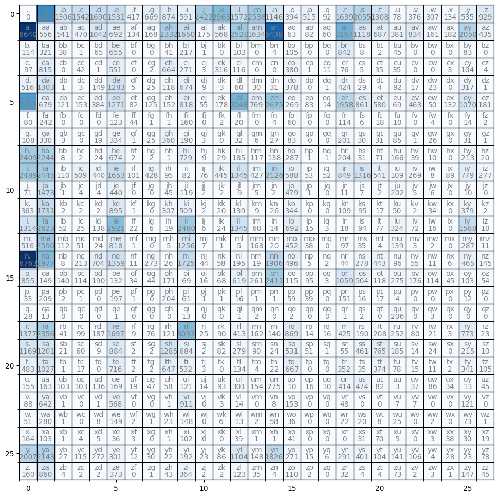
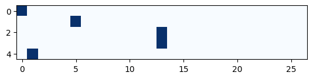

Code
import torch
import torch.nn.functional as F
import string
import numpy as np
import matplotlib.pyplot as plt
torch.set_printoptions(linewidth=120)
seed = 2**31 - 1Marc Dumon
January 21, 2023
A bigram language model is a model that only works with two characters at the time. It models the conditional probabilities of the next character, given only the previous character.
In this notebook we develop two bigram models: 1) by counting and 2) by using a simple neural network with a single layer. The models receive a character as input and predict the next character in a sequence using a Markov process.
The focus of this notebook is 1) introducing torch.Tensor and its subtleties and use in efficiently evaluating neural networks and 2) the overall framework of language modeling that includes model training, sampling, and the evaluation of a loss (e.g. the negative log likelihood for classification).
Load the data
Total # names: ...................32,033
Total # characters in all names: 196,113
['emma', 'olivia', 'ava', 'isabella', 'sophia']Our data consists of 32,033 names, each with a length between 2 and 15 characters. To better understand the structure and patterns of the data at a character level, we can print the bigrams for the first 2 names. A bigram is a pair of consecutive characters in a string. By printing the bigrams for the first 2 names, we can gain a better understanding of what our model will be learning and predicting.
emma
['e', 'm']
['m', 'm']
['m', 'a']
olivia
['o', 'l']
['l', 'i']
['i', 'v']
['v', 'i']
['i', 'a']Padding
We need two special characters besides a..z to indicate the beginning <S> and the end <E> of a name. But because <S> can never be an output and <E> never an input we can simplify a little and use only one special character to indicate both the beginning and the end of a name. We choose “.” as special character.
Our bigrams now look as follows:
['.', 'e']
['e', 'm']
['m', 'm']
['m', 'a']
['a', '.']
['.', 'o']
['o', 'l']
['l', 'i']
['i', 'v']
['v', 'i']
['i', 'a']
['a', '.']
Encoding and decoding characters
We define an encoder ch2ix and decoder ix2ch function that maps a character with a numerical representation (i.e. a unique integer) and vice-versa.
Encoder ch2ix:
{'.': 0, 'a': 1, 'b': 2, 'c': 3, 'd': 4, 'e': 5, 'f': 6, 'g': 7, 'h': 8, 'i': 9, 'j': 10, 'k': 11, 'l': 12, 'm': 13, 'n': 14, 'o': 15, 'p': 16, 'q': 17, 'r': 18, 's': 19, 't': 20, 'u': 21, 'v': 22, 'w': 23, 'x': 24, 'y': 25, 'z': 26}
Decoder ix2ch:
{0: '.', 1: 'a', 2: 'b', 3: 'c', 4: 'd', 5: 'e', 6: 'f', 7: 'g', 8: 'h', 9: 'i', 10: 'j', 11: 'k', 12: 'l', 13: 'm', 14: 'n', 15: 'o', 16: 'p', 17: 'q', 18: 'r', 19: 's', 20: 't', 21: 'u', 22: 'v', 23: 'w', 24: 'x', 25: 'y', 26: 'z'}
E.g. emma: [0, 5, 13, 13, 1, 0]One way to learn the conditional probabilities of which character is likely to follow a previous character is to count the number of times a bigram occurs in our training set and then convert these counts into probabilities. This is known as counting bigram occurrences and is a simple method for learning these probabilities. By doing this, we can create a model that is able to predict the next character in a sequence based on the previous character.
Counting
bg_count: dict[tuple[str, str], int] = {}
for w in names:
chs = ["."] + list(w) + ["."]
for ch1, ch2 in zip(chs[:-1], chs[1:]):
bg_count[(ch1, ch2)] = bg_count.get((ch1, ch2), 0) + 1
# sort by counts
a = sorted(bg_count.items(), key=lambda kv: kv[1], reverse=True)
print(a[:10])
print("...")
print(a[-10:])[(('n', '.'), 6763), (('a', '.'), 6640), (('a', 'n'), 5438), (('.', 'a'), 4410), (('e', '.'), 3983), (('a', 'r'), 3264), (('e', 'l'), 3248), (('r', 'i'), 3033), (('n', 'a'), 2977), (('.', 'k'), 2963)]
...
[(('g', 'v'), 1), (('d', 'q'), 1), (('x', 'b'), 1), (('w', 'z'), 1), (('h', 'q'), 1), (('j', 'b'), 1), (('x', 'm'), 1), (('w', 'g'), 1), (('t', 'b'), 1), (('z', 'x'), 1)]We see that the most frequent starting character for names are “a” and “k”. The most frequent ending characters are “n” and “a”. Note: the bigrams with 0 occurence are not counted here.
Let’s now represent the bigram counts in a 2D tensor as it allows for more efficient manipulation and analysis of the data. The rows of the tensor represent the previous character and the columns represent the next character, with the values being the bigram counts. By organizing the data in this way, we can easily access and analyze the frequency of different bigrams in the data. The tensor has a shape of (27, 27) because there are 26 characters plus one special character, giving a total of 27 different categories. This representation of the data allows us to more easily model the conditional probabilities of the next character given the previous character, which can be used to predict the next character in a sequence.
# Count all bigrams
N = torch.zeros((27, 27), dtype=torch.int32)
for w in names:
chs = ["."] + list(w) + ["."]
for ch1, ch2 in zip(chs[:-1], chs[1:]):
ix1 = ch2ix[ch1]
ix2 = ch2ix[ch2]
N[ix1, ix2] += 1
# Plot the bigrams
plt.figure(figsize=(12, 12))
plt.imshow(N, cmap="Blues")
ax = plt.gca()
# Minor ticks
ax.set_xticks(np.arange(-0.5, 27, 1), minor=True)
ax.set_yticks(np.arange(-0.5, 27, 1), minor=True)
# Gridlines based on minor ticks
ax.grid(which="minor", color="black", linestyle="-", linewidth=1)
for i in range(27):
for j in range(27):
chstr = ix2ch[i] + ix2ch[j]
plt.text(j, i, chstr, ha="center", va="bottom", color="grey")
plt.text(j, i, str(N[i, j].item()), ha="center", va="top", color="gray")
plt.show()
In the first row [0, :] we find the counts for all the different first characters. F.i. 4,410 names start with “a”, 2,963 with a “k”, but only 78 with a “u”. In the first column [:, 0] we find the counts for all last characters. F.i. 6,763 names end with “n”, 6,640 with “a”, but only 28 with “q”.
Probabilities
We can convert the bigram counts into probabilities by dividing each element in the tensor by the sum of all the elements in its corresponding row. This process allows us to express the frequency of each bigram as a probability, which can be used to predict the next character in a sequence based on the previous character. This is done by normalizing the count data across each row, which allows us to express the relative frequency of each bigram within the context of the previous character.
\(p_{ij} = \large\frac{n_{ij}}{\sum_{j=0}^{26}{n_{ij}}}\)
Sum: For a 2d tensor, the dim in torch.tensor.sum is the dimension we want to sum. So,dim=0 calculates the sum of each column, dim=1 the sum of each row.
The way to understand this is that it collapses the specified dim. So when it collapses dim 1 (the column), the sum becomes just one column (it sums row wise). If keepdim=True, the output tensor is of the same size as the input, except in the dimension(s) dim, where it is of size 1. If keepdim=False, the output dim is squeezed and the output has 1 (or len(dim)) fewer dimension(s)
Broadcasting: N has dimension (27,27). N.sum(dim=1,keepdim=True) has dimention (27,1). It’s not possible to devide a (27,27) tensor by a (27,1) tensor. Nevertheless N / N.sum(dim=1,keepdim=True) is valid because broadcasting stretches the (27,1) column vector into a (27,27) matrix by copying the column vector 27 times and then makes an element wise division.
tensor([[0.0000e+00, 1.3767e-01, 4.0770e-02, 4.8138e-02, 5.2758e-02, 4.7794e-02, 1.3018e-02, 2.0885e-02, 2.7284e-02,
1.8450e-02, 7.5610e-02, 9.2498e-02, 4.9074e-02, 7.9231e-02, 3.5776e-02, 1.2300e-02, 1.6077e-02, 2.8720e-03,
5.1166e-02, 6.4153e-02, 4.0833e-02, 2.4350e-03, 1.1738e-02, 9.5839e-03, 4.1832e-03, 1.6702e-02, 2.9001e-02],
[1.9596e-01, 1.6408e-02, 1.5966e-02, 1.3870e-02, 3.0751e-02, 2.0422e-02, 3.9546e-03, 4.9579e-03, 6.8821e-02,
4.8694e-02, 5.1645e-03, 1.6763e-02, 7.4605e-02, 4.8222e-02, 1.6048e-01, 1.8592e-03, 2.4199e-03, 1.7707e-03,
9.6326e-02, 3.2994e-02, 2.0274e-02, 1.1244e-02, 2.4613e-02, 4.7514e-03, 5.3711e-03, 6.0499e-02, 1.2838e-02],
[4.3100e-02, 1.2136e-01, 1.4367e-02, 3.7807e-04, 2.4575e-02, 2.4764e-01, 0.0000e+00, 0.0000e+00, 1.5501e-02,
8.2042e-02, 3.7807e-04, 0.0000e+00, 3.8941e-02, 0.0000e+00, 1.5123e-03, 3.9698e-02, 0.0000e+00, 0.0000e+00,
3.1834e-01, 3.0246e-03, 7.5614e-04, 1.7013e-02, 0.0000e+00, 0.0000e+00, 0.0000e+00, 3.1380e-02, 0.0000e+00],
[2.7463e-02, 2.3075e-01, 0.0000e+00, 1.1891e-02, 2.8313e-04, 1.5600e-01, 0.0000e+00, 5.6625e-04, 1.8800e-01,
7.6727e-02, 8.4938e-04, 8.9468e-02, 3.2843e-02, 0.0000e+00, 0.0000e+00, 1.0759e-01, 2.8313e-04, 3.1144e-03,
2.1518e-02, 1.4156e-03, 9.9094e-03, 9.9094e-03, 0.0000e+00, 0.0000e+00, 8.4938e-04, 2.9445e-02, 1.1325e-03],
[9.3886e-02, 2.3708e-01, 1.8195e-04, 5.4585e-04, 2.7111e-02, 2.3344e-01, 9.0975e-04, 4.5488e-03, 2.1470e-02,
1.2263e-01, 1.6376e-03, 5.4585e-04, 1.0917e-02, 5.4585e-03, 5.6405e-03, 6.8777e-02, 0.0000e+00, 1.8195e-04,
7.7147e-02, 5.2766e-03, 7.2780e-04, 1.6739e-02, 3.0932e-03, 4.1849e-03, 0.0000e+00, 5.7678e-02, 1.8195e-04],
[1.9503e-01, 3.3247e-02, 5.9247e-03, 7.4916e-03, 1.8802e-02, 6.2234e-02, 4.0151e-03, 6.1206e-03, 7.4426e-03,
4.0053e-02, 2.6930e-03, 8.7157e-03, 1.5904e-01, 3.7654e-02, 1.3098e-01, 1.3171e-02, 4.0640e-03, 6.8550e-04,
9.5872e-02, 4.2158e-02, 2.8399e-02, 3.3785e-03, 2.2671e-02, 2.4482e-03, 6.4633e-03, 5.2392e-02, 8.8626e-03],
[8.8398e-02, 2.6740e-01, 0.0000e+00, 0.0000e+00, 0.0000e+00, 1.3591e-01, 4.8619e-02, 1.1050e-03, 1.1050e-03,
1.7680e-01, 0.0000e+00, 2.2099e-03, 2.2099e-02, 0.0000e+00, 4.4199e-03, 6.6298e-02, 0.0000e+00, 0.0000e+00,
1.2597e-01, 6.6298e-03, 1.9890e-02, 1.1050e-02, 0.0000e+00, 4.4199e-03, 0.0000e+00, 1.5470e-02, 2.2099e-03],
[5.6046e-02, 1.7125e-01, 1.5568e-03, 0.0000e+00, 9.8599e-03, 1.7333e-01, 5.1894e-04, 1.2974e-02, 1.8682e-01,
9.8599e-02, 1.5568e-03, 0.0000e+00, 1.6606e-02, 3.1136e-03, 1.4011e-02, 4.3072e-02, 0.0000e+00, 0.0000e+00,
1.0431e-01, 1.5568e-02, 1.6087e-02, 4.4110e-02, 5.1894e-04, 1.3492e-02, 0.0000e+00, 1.6087e-02, 5.1894e-04],
[3.1631e-01, 2.9464e-01, 1.0504e-03, 2.6261e-04, 3.1513e-03, 8.8498e-02, 2.6261e-04, 2.6261e-04, 1.3130e-04,
9.5720e-02, 1.1817e-03, 3.8078e-03, 2.4291e-02, 1.5362e-02, 1.8120e-02, 3.7684e-02, 1.3130e-04, 1.3130e-04,
2.6786e-02, 4.0704e-03, 9.3225e-03, 2.1796e-02, 5.1208e-03, 1.3130e-03, 0.0000e+00, 2.7967e-02, 2.6261e-03],
[1.4061e-01, 1.3813e-01, 6.2143e-03, 2.8755e-02, 2.4857e-02, 9.3385e-02, 5.7059e-03, 2.4179e-02, 5.3669e-03,
4.6325e-03, 4.2935e-03, 2.5140e-02, 7.5984e-02, 2.4123e-02, 1.2011e-01, 3.3218e-02, 2.9942e-03, 2.9377e-03,
4.7963e-02, 7.4346e-02, 3.0563e-02, 6.1578e-03, 1.5197e-02, 4.5195e-04, 5.0280e-03, 4.4009e-02, 1.5649e-02],
[2.4483e-02, 5.0793e-01, 3.4483e-04, 1.3793e-03, 1.3793e-03, 1.5172e-01, 0.0000e+00, 0.0000e+00, 1.5517e-02,
4.1034e-02, 6.8966e-04, 6.8966e-04, 3.1034e-03, 1.7241e-03, 6.8966e-04, 1.6517e-01, 3.4483e-04, 0.0000e+00,
3.7931e-03, 2.4138e-03, 6.8966e-04, 6.9655e-02, 1.7241e-03, 2.0690e-03, 0.0000e+00, 3.4483e-03, 0.0000e+00],
[7.2024e-02, 3.4345e-01, 3.9683e-04, 3.9683e-04, 3.9683e-04, 1.7758e-01, 1.9841e-04, 0.0000e+00, 6.0913e-02,
1.0099e-01, 3.9683e-04, 3.9683e-03, 2.7579e-02, 1.7857e-03, 5.1587e-03, 6.8254e-02, 0.0000e+00, 0.0000e+00,
2.1627e-02, 1.8849e-02, 3.3730e-03, 9.9206e-03, 3.9683e-04, 6.7460e-03, 0.0000e+00, 7.5198e-02, 3.9683e-04],
[9.4140e-02, 1.8792e-01, 3.7255e-03, 1.7911e-03, 9.8868e-03, 2.0927e-01, 1.5762e-03, 4.2986e-04, 1.3612e-03,
1.7768e-01, 4.2986e-04, 1.7194e-03, 9.6361e-02, 4.2986e-03, 1.0030e-03, 4.9577e-02, 1.0747e-03, 2.1493e-04,
1.2896e-03, 6.7345e-03, 5.5165e-03, 2.3212e-02, 5.1583e-03, 1.1463e-03, 0.0000e+00, 1.1377e-01, 7.1644e-04],
[7.7687e-02, 3.8994e-01, 1.6862e-02, 7.6784e-03, 3.6134e-03, 1.2316e-01, 1.5056e-04, 0.0000e+00, 7.5279e-04,
1.8910e-01, 1.0539e-03, 1.5056e-04, 7.5279e-04, 2.5294e-02, 3.0111e-03, 6.8052e-02, 5.7212e-03, 0.0000e+00,
1.4604e-02, 5.2695e-03, 6.0223e-04, 2.0927e-02, 4.5167e-04, 3.0111e-04, 0.0000e+00, 4.3210e-02, 1.6561e-03],
[3.6902e-01, 1.6244e-01, 4.3651e-04, 1.1622e-02, 3.8413e-02, 7.4153e-02, 6.0021e-04, 1.4896e-02, 1.4187e-03,
9.4123e-02, 2.4008e-03, 3.1647e-03, 1.0640e-02, 1.0367e-03, 1.0400e-01, 2.7064e-02, 2.7282e-04, 1.0913e-04,
2.4008e-03, 1.5169e-02, 2.4172e-02, 5.2382e-03, 3.0010e-03, 6.0021e-04, 3.2739e-04, 2.5372e-02, 7.9118e-03],
[1.0776e-01, 1.8780e-02, 1.7646e-02, 1.4369e-02, 2.3948e-02, 1.6637e-02, 4.2854e-03, 5.5458e-03, 2.1553e-02,
8.6967e-03, 2.0166e-03, 8.5707e-03, 7.8019e-02, 3.2896e-02, 3.0388e-01, 1.4495e-02, 1.1974e-02, 3.7812e-04,
1.3348e-01, 6.3524e-02, 1.4873e-02, 3.4661e-02, 2.2183e-02, 1.4369e-02, 5.6718e-03, 1.2982e-02, 6.8062e-03],
[3.2164e-02, 2.0370e-01, 1.9493e-03, 9.7466e-04, 0.0000e+00, 1.9201e-01, 9.7466e-04, 0.0000e+00, 1.9883e-01,
5.9454e-02, 9.7466e-04, 9.7466e-04, 1.5595e-02, 9.7466e-04, 9.7466e-04, 5.7505e-02, 3.8012e-02, 0.0000e+00,
1.4717e-01, 1.5595e-02, 1.6569e-02, 3.8986e-03, 0.0000e+00, 0.0000e+00, 0.0000e+00, 1.1696e-02, 0.0000e+00],
[1.0294e-01, 4.7794e-02, 0.0000e+00, 0.0000e+00, 0.0000e+00, 3.6765e-03, 0.0000e+00, 0.0000e+00, 0.0000e+00,
4.7794e-02, 0.0000e+00, 0.0000e+00, 3.6765e-03, 7.3529e-03, 0.0000e+00, 7.3529e-03, 0.0000e+00, 0.0000e+00,
3.6765e-03, 7.3529e-03, 0.0000e+00, 7.5735e-01, 0.0000e+00, 1.1029e-02, 0.0000e+00, 0.0000e+00, 0.0000e+00],
[1.0843e-01, 1.8551e-01, 3.2283e-03, 7.7953e-03, 1.4724e-02, 1.3362e-01, 7.0866e-04, 5.9843e-03, 9.5276e-03,
2.3882e-01, 1.9685e-03, 7.0866e-03, 3.2520e-02, 1.2756e-02, 1.1024e-02, 6.8425e-02, 1.1024e-03, 1.2598e-03,
3.3465e-02, 1.4961e-02, 1.6378e-02, 1.9843e-02, 6.2992e-03, 1.6535e-03, 2.3622e-04, 6.0866e-02, 1.8110e-03],
[1.4421e-01, 1.4816e-01, 2.5907e-03, 7.4019e-03, 1.1103e-03, 1.0906e-01, 2.4673e-04, 2.4673e-04, 1.5852e-01,
8.4382e-02, 2.4673e-04, 1.0116e-02, 3.4419e-02, 1.1103e-02, 2.9608e-03, 6.5507e-02, 6.2916e-03, 1.2337e-04,
6.7851e-03, 5.6871e-02, 9.4375e-02, 2.2823e-02, 1.7271e-03, 2.9608e-03, 0.0000e+00, 2.6524e-02, 1.2337e-03],
[8.6715e-02, 1.8438e-01, 1.7953e-04, 3.0521e-03, 0.0000e+00, 1.2855e-01, 3.5907e-04, 3.5907e-04, 1.1616e-01,
9.5512e-02, 5.3860e-04, 0.0000e+00, 2.4057e-02, 7.1813e-04, 3.9497e-03, 1.1975e-01, 0.0000e+00, 0.0000e+00,
6.3196e-02, 6.2837e-03, 6.7145e-02, 1.4004e-02, 2.6930e-03, 1.9749e-03, 3.5907e-04, 6.1221e-02, 1.8851e-02],
[4.9442e-02, 5.1994e-02, 3.2855e-02, 3.2855e-02, 4.3381e-02, 5.3907e-02, 6.0606e-03, 1.4992e-02, 1.8501e-02,
3.8596e-02, 4.4657e-03, 2.9665e-02, 9.6013e-02, 4.9123e-02, 8.7719e-02, 3.1898e-03, 5.1037e-03, 3.1898e-03,
1.3206e-01, 1.5120e-01, 2.6156e-02, 9.5694e-04, 1.1802e-02, 2.7432e-02, 1.0845e-02, 4.1467e-03, 1.4354e-02],
[3.4201e-02, 2.4951e-01, 3.8865e-04, 0.0000e+00, 3.8865e-04, 2.2075e-01, 0.0000e+00, 0.0000e+00, 3.8865e-04,
3.5406e-01, 0.0000e+00, 1.1660e-03, 5.4411e-03, 0.0000e+00, 3.1092e-03, 5.9464e-02, 0.0000e+00, 0.0000e+00,
1.8655e-02, 0.0000e+00, 0.0000e+00, 2.7206e-03, 2.7206e-03, 0.0000e+00, 0.0000e+00, 4.7027e-02, 0.0000e+00],
[5.4898e-02, 3.0140e-01, 1.0764e-03, 0.0000e+00, 8.6114e-03, 1.6039e-01, 2.1529e-03, 1.0764e-03, 2.4758e-02,
1.5931e-01, 0.0000e+00, 6.4586e-03, 1.3994e-02, 2.1529e-03, 6.2433e-02, 3.8751e-02, 0.0000e+00, 0.0000e+00,
2.3681e-02, 2.1529e-02, 8.6114e-03, 2.6911e-02, 0.0000e+00, 2.1529e-03, 0.0000e+00, 7.8579e-02, 1.0764e-03],
[2.3529e-01, 1.4778e-01, 1.4347e-03, 5.7389e-03, 7.1736e-03, 5.1650e-02, 4.3042e-03, 0.0000e+00, 1.4347e-03,
1.4634e-01, 0.0000e+00, 0.0000e+00, 5.5954e-02, 1.4347e-03, 1.4347e-03, 5.8824e-02, 0.0000e+00, 0.0000e+00,
0.0000e+00, 4.4476e-02, 1.0043e-01, 7.1736e-03, 0.0000e+00, 4.3042e-03, 5.4519e-02, 4.3042e-02, 2.7260e-02],
[2.0530e-01, 2.1921e-01, 2.7619e-03, 1.1764e-02, 2.7823e-02, 3.0790e-02, 1.2275e-03, 3.0687e-03, 2.2504e-03,
1.9640e-02, 2.3527e-03, 8.7971e-03, 1.1293e-01, 1.5139e-02, 1.8678e-01, 2.7721e-02, 1.5344e-03, 6.1375e-04,
2.9767e-02, 4.1019e-02, 1.0638e-02, 1.4423e-02, 1.0843e-02, 4.0917e-04, 2.8642e-03, 2.3527e-03, 7.9787e-03],
[6.6722e-02, 3.5863e-01, 1.6681e-03, 8.3403e-04, 8.3403e-04, 1.5555e-01, 0.0000e+00, 4.1701e-04, 1.7932e-02,
1.5179e-01, 8.3403e-04, 8.3403e-04, 5.1293e-02, 1.4595e-02, 1.6681e-03, 4.5872e-02, 8.3403e-04, 0.0000e+00,
1.3344e-02, 1.6681e-03, 1.6681e-03, 3.0442e-02, 8.3403e-04, 1.2510e-03, 4.1701e-04, 6.1301e-02, 1.8766e-02]])The tensor P contains all of the necessary information to sample from our bigram model. The elements of P represent the parameters of our language model and can be used to generate new names by sampling from the model. This is done by starting with the token “.” and then looking at the first row in P, which contains the probabilities for every possible next character. We then sample the next character from this probability distribution and look at its corresponding row in P. We continue this process of sampling and iterating through the rows of P until we sample a “.” indicating the end of the name. This process allows us to generate new names by sampling from the probability distributions represented in P, which are based on the frequency of bigrams in the training data.
We use torch.multinomial for sampling (multinomial distribution is a generalization of the binomial distribution).
Let’s now generate a few names:
from numbers import Number
from typing import Any, Literal
g = torch.Generator().manual_seed(seed)
for i in range(10):
out = []
ix = 0 # The start token.
while True:
p = P[ix] # type: ignore
ix = torch.multinomial(p, num_samples=1, replacement=True, generator=g).item()
out.append(ix2ch[ix]) # type: ignore
if ix == 0: # The end token.
break
print("".join(out))mor.
axx.
minaymoryles.
kondlaisah.
anchshizarie.
odaren.
iaddash.
h.
jhinatien.
egushl.The generated names produced by our bigram model are of poor quality, which is due to the limitations of the bigram model itself.
However, when we compare the performance of the bigram model with a model that simply samples characters uniformly (where each character has an equal probability of 1/27 of being selected as the next character), we can see that the bigram model is actually able to capture some meaningful patterns and structure in the data. This suggests that the bigram model is able to provide some level of prediction accuracy, even if it is not able to produce high-quality names.
g = torch.Generator().manual_seed(seed)
for i in range(10): # 10 names.
out = []
ix = 0 # The start token.
while True:
p = torch.ones(27) / 27.0 # Uniform distribution.
ix = torch.multinomial(p, num_samples=1, replacement=True, generator=g).item()
out.append(ix2ch[ix]) # type: ignore
if ix == 0: # Now the end token.
break
print("".join(out))qvsaayxbqrqmyqwuznivanukotdjvdhd.
qnoymtzduqkatdetkpfjdgigvlejfkrsqlwnirghhzwlu.
idcx.
cekmzucjnjoeovjvrggqrjr.
cfbhabkslpokc.
xtxwbpmknuusxdgzfexhwqpldpdnwzvkyxsqjforqqpfxstwkfoufhvwfhmsuyyotvcvvqpfcbydjcouhkajkhqnnpqmmllaordqy.
gszpw.
zlgijinangzzuulsyvqrufuawavsdbnwvlmrypvgrsfgpshgnmwafqmsjdvbhngvoiigxhkwdltrdkwnagzyknqv.
lfstdqigvncdoidetsukgdp.
cfpjsxeqjcsmjwguzes.We now want to evaluate the quality of our model and summerize it into a single number.
A very good model is a model that is very good at predicting the next character given the previous one. In other words for every bigram \((c_i, c_{i+1})\) of every name in our traininset: \(p(c_{i+1}|c_i)\approx1\).
Now how can we summerize all these probabilities into a single number? - If we have a good model the product of all the probabilities or likelihood should be very high.
- Because all probabilities are between 0 and 1, the product of the probabilities will be a tiny number. - Therefore we take the log-likelihood instead = \(\log(\prod p(x)) = \sum \log(p(x))\) - If all probabilities are 1, log-likelihood is 0. If the probabilities are less than 1, the likelihood is more negative. - To get a loss function: - maximize the likelihood w.r.t. the model parameters (statistical modeling). - equivalent to maximizing log-likelihood (because log is monotonic). - equivalent to minimizing the negative log-likelihood. - equivalent to minimizing the average negative log-likelihood.
The likelihood \(\mathcal{L}(\theta|X)\) represents the probability of random variable realizations conditional on particular values of the statistical parameters \(\theta\).
Likelihood is the hypothetical probability that an event that has already occurred would yield a specific outcome. The concept differs from that of a probability in that a probability refers to the occurrence of future events, while a likelihood refers to past events with known outcomes. In other words, when \(f_{\theta}(x)\) is viewed as a function of \(x\) with \(\theta\) fixed, it is a probability density function \(P(x|\theta)\), and when viewed as a function of \(\theta\) with \(x\) fixed, it is a likelihood function \(\mathcal{L}(\theta|X)\).
The likelihood function does not specify the probability that \(\theta\) is the truth, given the observed sample \(X=x\). Such an interpretation is a common error!!
If the random variables are independent, then the joint-distribution is the product of the distribution of each of the individual random variables or marginals.
\(\mathcal{L}(\theta|X) = \prod p_{\theta}(x)\).
For intuitive explainations see: https://towardsdatascience.com/likelihood-probability-and-the-math-you-should-know-9bf66db5241b.
log_likelihood = 0.0
n = 0
for w in names:
chs = ["."] + list(w) + ["."]
for ch1, ch2 in zip(chs[:-1], chs[1:]):
ix1 = ch2ix[ch1]
ix2 = ch2ix[ch2]
prob = P[ix1, ix2]
log_prob = torch.log(prob)
log_likelihood += log_prob.item()
n += 1
print(f"log_likelihood: {log_likelihood:,.0f}")
nll = -log_likelihood
print(f"nll: {nll:,.0f}")
print(f"mean nll: {nll / n:.4f}")log_likelihood: -559,874
nll: 559,874
mean nll: 2.4540Problem: The loss goes to infinity when a bigram has zero probability.
The bigram ‘cb’ in following example has 0 probability, hence the log-likelihood is \(\infty\).
log_likelihood = 0.0
n = 0
for w in ["marcb"]:
chs = ["."] + list(w) + ["."]
for ch1, ch2 in zip(chs[:-1], chs[1:]):
ix1 = ch2ix[ch1]
ix2 = ch2ix[ch2]
prob = P[ix1, ix2]
log_prob = torch.log(prob)
log_likelihood += log_prob.item()
n += 1
print(f"{ch1}{ch2}: {prob:.3f} {log_prob:.3f}")
print(f"log_likelihood: {log_likelihood:,.0f}")
nll = -log_likelihood
print(f"nll: {nll:,.0f}")
print(f"mean nll: {nll / n:.2f}").m: 0.079 -2.535
ma: 0.390 -0.942
ar: 0.096 -2.340
rc: 0.008 -4.854
cb: 0.000 -inf
b.: 0.043 -3.144
log_likelihood: -inf
nll: inf
mean nll: infSolution: Smoothing
Add 1 or more to the counts. The bigger the number you add, the smoother the model becomes.
smooth = 1
Psmooth = (N + smooth) / (N + smooth).sum(dim=1, keepdim=True)
log_likelihood = 0.0
n = 0
for w in ["marcb"]:
chs = ["."] + list(w) + ["."]
for ch1, ch2 in zip(chs[:-1], chs[1:]):
ix1 = ch2ix[ch1]
ix2 = ch2ix[ch2]
prob = Psmooth[ix1, ix2]
logprob = torch.log(prob)
log_likelihood += logprob.item()
n += 1
print(f"{ch1}{ch2}: {prob:.3f} {logprob:.3f}")
print(f"log_likelihood: {log_likelihood:,.0f}")
nll = -log_likelihood
print(f"nll: {nll:,.0f}")
print(f"mean nll: {nll / n:.2f}").m: 0.079 -2.536
ma: 0.389 -0.945
ar: 0.096 -2.341
rc: 0.008 -4.846
cb: 0.000 -8.177
b.: 0.043 -3.146
log_likelihood: -22
nll: 22
mean nll: 3.67If the smooting number is very high then the distribution becomes more uniform and the output more random.
smooth = 1000
Psmooth = (N + smooth) / (N + smooth).sum(dim=1, keepdim=True)
for i in range(10): # 10 names.
out = []
ix = 0 # The start token.
while True:
p = Psmooth[ix] # type: ignore
ix = torch.multinomial(p, num_samples=1, replacement=True).item()
out.append(ix2ch[ix]) # type: ignore
if ix == 0: # Now the end token.
break
print("".join(out))zjjheyxpgahrmduqk.
d.
hfqgpngjrietewbnee.
wwizb.
rmzue.
xohdxxnuunqyuxasdgfjwjgwla.
mzadufjneyufpxozaspebrijeyarhbyfzxvh.
dt.
elnlkkzkmsbaqre.
lligarrhdqnbimafuddovylkmkrbxdtloslemtidffnafrttis.We will now frame the problem of bigram character-level language modeling within the neural network framework. We will approach this problem in a slightly different way, but ultimately arrive at a similar position as with our counting model. Our neural network will take a single character as input, use a set of parameters (weights) W, and output a probability distribution over the next character in the sequence. We know the true next character and want the output probability for it to be as high as possible, which is equivalent to minimizing the negative log-likelihood loss. To optimize the weights of the network and achieve this goal, we will use gradient-based optimization to tune the weights such that the negative log-likelihood loss is minimized.
Trainingset: We create a trainingset of all the bigrams. It contains two lists, the inputs xs and the targets ys.
We will start with just one name to better see how the neural network is build step-by-step.
xs, ys = [], []
for w in names[:1]:
print(f"The bigrams for name: {w}:")
chs = ["."] + list(w) + ["."]
for ch1, ch2 in zip(chs[:-1], chs[1:]):
ix1 = ch2ix[ch1]
ix2 = ch2ix[ch2]
print(ch1, ch2)
xs.append(ix1)
ys.append(ix2)
print("The dataset:")
xs = torch.tensor(xs)
ys = torch.tensor(ys)
print(f"{xs=}\n{ys=}")The bigrams for name: emma:
. e
e m
m m
m a
a .
The dataset:
xs=tensor([ 0, 5, 13, 13, 1])
ys=tensor([ 5, 13, 13, 1, 0])There are 5 separate input examples in this dataset. When we input 0 (“.”) into the networks, we want it’s weights to be arranged so that 5 (“e”) gets a high probability, when we input 13 we want high probability for 1 (“m”) and a high probability for 1 (“a”).
One-hot encodings: In order to use the integer character indexes as input in a neural network, we need to use a technique called one-hot encoding. One-hot encoding is a way of representing categorical data (such as integer indexes or characters) as a vector of binary values. A one-hot vector for a character with index ix has all zero values except for the ix-th element, which is set to 1. This encoding method is used because it avoids implying a natural ordering between different characters (for example, “a” < “b”), which would not be meaningful in this context. Additionally, it is not desirable to have the input neurons take on integer values that are then multiplied by the weights, as this would not provide useful information to the model. PyTorch provides a function (torch.nn.functional.one_hot()) to one-hot encode integers.
One-hot encoding for tensor([ 0, 5, 13, 13, 1])
tensor([[1., 0., 0., 0., 0., 0., 0., 0., 0., 0., 0., 0., 0., 0., 0., 0., 0., 0., 0., 0., 0., 0., 0., 0., 0., 0., 0.],
[0., 0., 0., 0., 0., 1., 0., 0., 0., 0., 0., 0., 0., 0., 0., 0., 0., 0., 0., 0., 0., 0., 0., 0., 0., 0., 0.],
[0., 0., 0., 0., 0., 0., 0., 0., 0., 0., 0., 0., 0., 1., 0., 0., 0., 0., 0., 0., 0., 0., 0., 0., 0., 0., 0.],
[0., 0., 0., 0., 0., 0., 0., 0., 0., 0., 0., 0., 0., 1., 0., 0., 0., 0., 0., 0., 0., 0., 0., 0., 0., 0., 0.],
[0., 1., 0., 0., 0., 0., 0., 0., 0., 0., 0., 0., 0., 0., 0., 0., 0., 0., 0., 0., 0., 0., 0., 0., 0., 0., 0.]])
1 neuron: The neuron will look at the input vectors (xenc) and perform a simple linear function \(W\cdot x+b\).
We create a (27,1) weight W and initialize it with a normal distribution using torch.randn. W is a column vector with 27 numbers. When we do a matrix multiplication of our input xenc (5,27) with W (27,1) we get 1 neuron with 5 (=batchsize) activations, one for each input vector.
(5,27) . (27,1) -> (5,1)
tensor([[-0.2176],
[ 0.2517],
[ 1.2141],
[ 1.2141],
[-1.2015]])27 neurons: In stead of only 1 neuron we would like to have 27. The shape of W will be (27,27). Each neuron has its 27 weights in the columns of W. We evaluate in parallel all the 27 neurons on all the 5 inputs, which is very efficient. Our output is now (5,27) . (27,27) -> (5, 27). Each element of the output is telling us what the firing rate of those neurons are on every one of the five samples.
(5,27) . (27,27) -> (5,27)
tensor([[ 0.3492, 0.0655, 0.3812, 1.4309, 0.6050, 0.2704, 2.4598, 0.3496, -0.3781, -0.1295, -0.5569, -0.5175,
2.6120, -0.5314, -0.0773, 1.5547, -1.6495, 0.8602, -0.8546, 0.7089, -1.5309, 0.7062, -0.2390, 1.8540,
-0.3423, -0.8785, -0.2678],
[-0.7606, -1.6208, -1.2376, 0.6203, -1.4803, 0.9769, 1.0299, -1.0603, -0.4021, 0.4907, 1.8731, -0.1639,
2.0216, 1.6673, -0.3785, -1.0568, 2.7153, -2.2130, -1.9582, -1.1643, -1.3517, -0.3833, 0.6396, 1.5745,
1.0158, 0.6076, 0.9357],
[-1.3656, -0.1813, 0.1459, -1.0900, 0.8762, 1.1151, -1.6163, -0.2267, 1.3320, 0.3232, 0.1221, 0.8284,
-0.7818, -0.4348, -1.3194, -2.3545, 0.1126, 1.5646, 1.5115, -1.6008, 0.6315, 0.1946, 0.5464, -0.4027,
-0.6687, -1.2158, -0.1634],
[-1.3656, -0.1813, 0.1459, -1.0900, 0.8762, 1.1151, -1.6163, -0.2267, 1.3320, 0.3232, 0.1221, 0.8284,
-0.7818, -0.4348, -1.3194, -2.3545, 0.1126, 1.5646, 1.5115, -1.6008, 0.6315, 0.1946, 0.5464, -0.4027,
-0.6687, -1.2158, -0.1634],
[ 0.6982, 0.1041, -1.2685, -0.5159, -2.7520, -0.2391, 0.9896, -0.3379, -1.8638, -0.3708, -0.4907, 2.0126,
1.5600, -0.9603, -0.5324, 0.0748, 1.1603, -0.8291, 2.0388, -0.2241, -0.4424, 0.5594, 0.0677, -0.2632,
0.0396, 0.1241, 0.2654]])E.g. Element [3,13] from the output gives us the firing rate of the 13th neuron of the 3th input. It was achieved by the dot product of the 3th input and the 13th column of W.
Element [3,13] from the output: -0.4348
Input 3: tensor([0., 0., 0., 0., 0., 0., 0., 0., 0., 0., 0., 0., 0., 1., 0., 0., 0., 0., 0., 0., 0., 0., 0., 0., 0., 0., 0.])
Column 13 of W: tensor([-0.5314, -0.9603, 0.6747, 1.5882, -2.2961, 1.6673, -1.7412, -0.6247, 0.0720, -0.9983, -1.6628, -1.0896,
-0.8744, -0.4348, 0.5732, 0.6638, 0.9935, 0.9466, 1.2713, -1.1280, 0.5499, -0.3745, 0.7821, 0.0523,
-0.3808, -1.5677, 0.2049])
Dot product of input 3 with column 13 of W: -0.4348Output probabilities: We now have a very simple neural network with a single linear layer and 27 inputs and 27 neurons. These neurons perform W.x, they don’t have a bias and they don’t have non-linearity.
Intuitively, we want to produce for every single input sample, a probability distribution for the 27 possible next characters in the sequence. For the moment our output has positive and negative numbers. They can’t be interpreted as counts because counts are positive. The also can’t be interpreted as probabilities because they can be smaller than 0 and bigger than 1 and they don’t sum up to 1. So we need to transform the outputs into numbers that sum to 1 and are between 0 and 1.
- We can interprete the output as log-counts logits. - To get something we can interprete as counts we exponentiate the log-counts. Negative numbers are be mapped to numbers netween 0 and 1. Positive numbers into numbers between 1 and \(\infin\). These counts are equivalent to the N counts array. - To obtain probabilities from the counts, we can normalize the counts so that they sum to 1 and are between 0 and 1. This will allow us to interpret the output of the network as a valid probability distribution over the possible next characters in the sequence.
probs=tensor([[0.0224, 0.0169, 0.0231, 0.0661, 0.0289, 0.0207, 0.1848, 0.0224, 0.0108, 0.0139, 0.0090, 0.0094, 0.2152, 0.0093,
0.0146, 0.0748, 0.0030, 0.0373, 0.0067, 0.0321, 0.0034, 0.0320, 0.0124, 0.1008, 0.0112, 0.0066, 0.0121],
[0.0074, 0.0031, 0.0046, 0.0296, 0.0036, 0.0422, 0.0446, 0.0055, 0.0106, 0.0260, 0.1035, 0.0135, 0.1201, 0.0843,
0.0109, 0.0055, 0.2403, 0.0017, 0.0022, 0.0050, 0.0041, 0.0108, 0.0302, 0.0768, 0.0439, 0.0292, 0.0405],
[0.0069, 0.0226, 0.0314, 0.0091, 0.0651, 0.0827, 0.0054, 0.0216, 0.1028, 0.0375, 0.0306, 0.0621, 0.0124, 0.0176,
0.0072, 0.0026, 0.0304, 0.1297, 0.1230, 0.0055, 0.0510, 0.0329, 0.0468, 0.0181, 0.0139, 0.0080, 0.0230],
[0.0069, 0.0226, 0.0314, 0.0091, 0.0651, 0.0827, 0.0054, 0.0216, 0.1028, 0.0375, 0.0306, 0.0621, 0.0124, 0.0176,
0.0072, 0.0026, 0.0304, 0.1297, 0.1230, 0.0055, 0.0510, 0.0329, 0.0468, 0.0181, 0.0139, 0.0080, 0.0230],
[0.0459, 0.0253, 0.0064, 0.0136, 0.0015, 0.0180, 0.0614, 0.0163, 0.0035, 0.0158, 0.0140, 0.1708, 0.1086, 0.0087,
0.0134, 0.0246, 0.0728, 0.0100, 0.1753, 0.0182, 0.0147, 0.0399, 0.0244, 0.0175, 0.0237, 0.0258, 0.0298]])
Verification all rows sum to 1:
tensor([1.0000, 1.0000, 1.0000, 1.0000, 1.0000])Softmax: The 2 operations
is called the softmax.
\(\text{softmax}(x_i) = \Large\frac{e^{x_i}}{\sum_j{e^{x_j}}}\)
Summary
Inputs: tensor([ 0, 5, 13, 13, 1])
Targets: tensor([ 5, 13, 13, 1, 0])nlls = torch.zeros(5)
for i in range(5):
# i-th bigram:
x = xs[i].item() # input character index
y = ys[i].item() # label character index
print("--------")
print(f"bigram example {i+1}: {ix2ch[x]}{ix2ch[y]} (indexes {x},{y})") # type: ignore
print("input to the neural net:", x)
print("output probabilities from the neural net:", probs[i])
print("label (actual next character):", y)
p = probs[i, y]
print("probability assigned by the net to the the correct character:", p.item())
logp = torch.log(p)
print("log likelihood:", logp.item())
nll = -logp
print("negative log likelihood:", nll.item())
nlls[i] = nll
print("=========")
print("average negative log likelihood, i.e. loss =", nlls.mean().item())--------
bigram example 1: .e (indexes 0,5)
input to the neural net: 0
output probabilities from the neural net: tensor([0.0607, 0.0100, 0.0123, 0.0042, 0.0168, 0.0123, 0.0027, 0.0232, 0.0137, 0.0313, 0.0079, 0.0278, 0.0091, 0.0082,
0.0500, 0.2378, 0.0603, 0.0025, 0.0249, 0.0055, 0.0339, 0.0109, 0.0029, 0.0198, 0.0118, 0.1537, 0.1459])
label (actual next character): 5
probability assigned by the net to the the correct character: 0.01228625513613224
log likelihood: -4.399273872375488
negative log likelihood: 4.399273872375488
--------
bigram example 2: em (indexes 5,13)
input to the neural net: 5
output probabilities from the neural net: tensor([0.0290, 0.0796, 0.0248, 0.0521, 0.1989, 0.0289, 0.0094, 0.0335, 0.0097, 0.0301, 0.0702, 0.0228, 0.0115, 0.0181,
0.0108, 0.0315, 0.0291, 0.0045, 0.0916, 0.0215, 0.0486, 0.0300, 0.0501, 0.0027, 0.0118, 0.0022, 0.0472])
label (actual next character): 13
probability assigned by the net to the the correct character: 0.018050700426101685
log likelihood: -4.014570713043213
negative log likelihood: 4.014570713043213
--------
bigram example 3: mm (indexes 13,13)
input to the neural net: 13
output probabilities from the neural net: tensor([0.0312, 0.0737, 0.0484, 0.0333, 0.0674, 0.0200, 0.0263, 0.0249, 0.1226, 0.0164, 0.0075, 0.0789, 0.0131, 0.0267,
0.0147, 0.0112, 0.0585, 0.0121, 0.0650, 0.0058, 0.0208, 0.0078, 0.0133, 0.0203, 0.1204, 0.0469, 0.0126])
label (actual next character): 13
probability assigned by the net to the the correct character: 0.026691533625125885
log likelihood: -3.623408794403076
negative log likelihood: 3.623408794403076
--------
bigram example 4: ma (indexes 13,1)
input to the neural net: 13
output probabilities from the neural net: tensor([0.0312, 0.0737, 0.0484, 0.0333, 0.0674, 0.0200, 0.0263, 0.0249, 0.1226, 0.0164, 0.0075, 0.0789, 0.0131, 0.0267,
0.0147, 0.0112, 0.0585, 0.0121, 0.0650, 0.0058, 0.0208, 0.0078, 0.0133, 0.0203, 0.1204, 0.0469, 0.0126])
label (actual next character): 1
probability assigned by the net to the the correct character: 0.07367686182260513
log likelihood: -2.6080665588378906
negative log likelihood: 2.6080665588378906
--------
bigram example 5: a. (indexes 1,0)
input to the neural net: 1
output probabilities from the neural net: tensor([0.0150, 0.0086, 0.0396, 0.0100, 0.0606, 0.0308, 0.1084, 0.0131, 0.0125, 0.0048, 0.1024, 0.0086, 0.0988, 0.0112,
0.0232, 0.0207, 0.0408, 0.0078, 0.0899, 0.0531, 0.0463, 0.0309, 0.0051, 0.0329, 0.0654, 0.0503, 0.0091])
label (actual next character): 0
probability assigned by the net to the the correct character: 0.014977526850998402
log likelihood: -4.201204299926758
negative log likelihood: 4.201204299926758
=========
average negative log likelihood, i.e. loss = 3.7693049907684326Minimize the loss: The loss, or mean negative log-likelihood, is composed of differential operations, which means that it can be minimized by adjusting the weights of W. This process, known as tuning, involves calculating the gradients of the loss with respect to the weights and using these gradients to update the weights in a way that reduces the loss. By minimizing the loss, we can improve the performance of the model and increase its ability to accurately predict the next character in a sequence based on the previous character.
number of bigrams: 228146loss = torch.tensor(0)
for k in range(10000):
# forward pass
# input to the network: one-hot encoding
xenc = F.one_hot(xs, num_classes=27).float()
logits = xenc @ W # predict log-counts
counts = logits.exp() # counts, equivalent to N
# probabilities for next character
probs = counts / counts.sum(1, keepdims=True)
# probs[torch.arange(num), ys] is the probability the net assigns to the target.
loss = -probs[torch.arange(num), ys].log().mean()
# backward pass
W.grad = None # set to zero the gradient
loss.backward()
# update
W.data += -50 * W.grad # type: ignore
print("loss: ", loss.item())loss: 2.454146385192871If we train long enough then we obtain the same loss (2.454) by gradient based optimization as by counting.
Moreover, we can verify that W.exp() is similar to N and W.exp()/W.exp().sum(1,True) is similar to P.
$e^{w_{ij}}=c_i n_{ij} $
\(\large \frac{e^{w_{ij}}}{\sum_j w_{ij}} = p_{ij}\)
tensor([[ inf, 2.2393e-03, 2.2393e-03, 2.2393e-03, 2.2393e-03, 2.2393e-03, 2.2392e-03, 2.2393e-03, 2.2393e-03,
2.2393e-03, 2.2393e-03, 2.2393e-03, 2.2393e-03, 2.2393e-03, 2.2393e-03, 2.2392e-03, 2.2393e-03, 2.2389e-03,
2.2393e-03, 2.2393e-03, 2.2393e-03, 2.2388e-03, 2.2392e-03, 2.2392e-03, 2.2390e-03, 2.2393e-03, 2.2393e-03],
[1.4188e-03, 1.4188e-03, 1.4188e-03, 1.4188e-03, 1.4188e-03, 1.4188e-03, 1.4188e-03, 1.4188e-03, 1.4188e-03,
1.4188e-03, 1.4188e-03, 1.4188e-03, 1.4188e-03, 1.4188e-03, 1.4188e-03, 1.4188e-03, 1.4188e-03, 1.4188e-03,
1.4188e-03, 1.4188e-03, 1.4188e-03, 1.4188e-03, 1.4188e-03, 1.4188e-03, 1.4188e-03, 1.4188e-03, 1.4188e-03],
[1.6511e-01, 1.6526e-01, 1.6465e-01, 1.4425e-01, 1.6494e-01, 1.6530e-01, inf, inf, 1.6470e-01,
1.6522e-01, 1.4479e-01, inf, 1.6509e-01, inf, 1.5767e-01, 1.6509e-01, inf, inf,
1.6531e-01, 1.6189e-01, 1.4712e-01, 1.6476e-01, inf, inf, inf, 1.6503e-01, inf],
[5.2283e-02, 5.2328e-02, inf, 5.2216e-02, 5.0727e-02, 5.2325e-02, inf, 4.9130e-02, 5.2327e-02,
5.2316e-02, 5.0288e-02, 5.2318e-02, 5.2291e-02, inf, inf, 5.2321e-02, 5.0550e-02, 5.1867e-02,
5.2269e-02, 5.1228e-02, 5.2192e-02, 5.2192e-02, inf, inf, 5.0283e-02, 5.2287e-02, 5.0890e-02],
[2.5044e-02, 2.5045e-02, 2.6110e-02, 2.4633e-02, 2.5040e-02, 2.5045e-02, 2.4823e-02, 2.5007e-02, 2.5038e-02,
2.5045e-02, 2.4932e-02, 2.4634e-02, 2.5030e-02, 2.5014e-02, 2.5015e-02, 2.5044e-02, inf, 2.6201e-02,
2.5044e-02, 2.5012e-02, 2.4752e-02, 2.5036e-02, 2.4988e-02, 2.5003e-02, inf, 2.5043e-02, 2.6191e-02],
[4.1502e-03, 4.1502e-03, 4.1501e-03, 4.1502e-03, 4.1502e-03, 4.1502e-03, 4.1501e-03, 4.1501e-03, 4.1502e-03,
4.1502e-03, 4.1501e-03, 4.1502e-03, 4.1502e-03, 4.1502e-03, 4.1502e-03, 4.1502e-03, 4.1501e-03, 4.1503e-03,
4.1502e-03, 4.1502e-03, 4.1501e-03, 4.1501e-03, 4.1502e-03, 4.1501e-03, 4.1501e-03, 4.1502e-03, 4.1502e-03],
[3.6560e-01, 3.6602e-01, inf, inf, inf, 3.6582e-01, 3.6508e-01, 3.1382e-01, 3.3524e-01,
3.6591e-01, inf, 3.3279e-01, 3.6366e-01, inf, 3.5135e-01, 3.6539e-01, inf, inf,
3.6579e-01, 3.5705e-01, 3.6337e-01, 3.6095e-01, inf, 3.5145e-01, inf, 3.6252e-01, 3.3337e-01],
[8.6546e-02, 8.6591e-02, 8.3572e-02, inf, 8.6225e-02, 8.6591e-02, 8.3860e-02, 8.6321e-02, 8.6593e-02,
8.6575e-02, 8.3542e-02, inf, 8.6386e-02, 8.5288e-02, 8.6343e-02, 8.6526e-02, inf, inf,
8.6577e-02, 8.6370e-02, 8.6378e-02, 8.6528e-02, 8.5293e-02, 8.6332e-02, inf, 8.6378e-02, 8.3958e-02],
[3.0849e-02, 3.0849e-02, 3.0745e-02, 3.0455e-02, 3.0817e-02, 3.0848e-02, 3.0418e-02, 3.0453e-02, 3.2537e-02,
3.0848e-02, 3.0758e-02, 3.0823e-02, 3.0845e-02, 3.0843e-02, 3.0844e-02, 3.0847e-02, 3.2623e-02, 3.2740e-02,
3.0846e-02, 3.0825e-02, 3.0839e-02, 3.0845e-02, 3.0830e-02, 3.0768e-02, inf, 3.0846e-02, 3.0811e-02],
[3.2666e-03, 3.2666e-03, 3.2666e-03, 3.2666e-03, 3.2666e-03, 3.2666e-03, 3.2666e-03, 3.2666e-03, 3.2666e-03,
3.2666e-03, 3.2666e-03, 3.2666e-03, 3.2666e-03, 3.2666e-03, 3.2666e-03, 3.2666e-03, 3.2666e-03, 3.2666e-03,
3.2666e-03, 3.2666e-03, 3.2666e-03, 3.2666e-03, 3.2666e-03, 3.2668e-03, 3.2666e-03, 3.2666e-03, 3.2666e-03],
[1.2832e-01, 1.2845e-01, 1.2792e-01, 1.2564e-01, 1.2565e-01, 1.2843e-01, inf, inf, 1.2824e-01,
1.2838e-01, 1.2256e-01, 1.2261e-01, 1.2733e-01, 1.2631e-01, 1.2214e-01, 1.2844e-01, 1.2454e-01, inf,
1.2755e-01, 1.2698e-01, 1.2194e-01, 1.2841e-01, 1.2631e-01, 1.2671e-01, inf, 1.2745e-01, inf],
[4.9564e-02, 4.9570e-02, 4.7453e-02, 4.7595e-02, 4.7761e-02, 4.9569e-02, 5.0034e-02, inf, 4.9562e-02,
4.9566e-02, 4.7525e-02, 4.9419e-02, 4.9550e-02, 4.9220e-02, 4.9455e-02, 4.9563e-02, inf, inf,
4.9544e-02, 4.9540e-02, 4.9391e-02, 4.9512e-02, 4.7756e-02, 4.9483e-02, inf, 4.9564e-02, 4.7690e-02],
[1.9855e-02, 1.9855e-02, 1.9849e-02, 1.9842e-02, 1.9853e-02, 1.9855e-02, 1.9841e-02, 1.9797e-02, 1.9838e-02,
1.9855e-02, 1.9797e-02, 1.9842e-02, 1.9855e-02, 1.9850e-02, 1.9832e-02, 1.9855e-02, 1.9833e-02, 1.9745e-02,
1.9837e-02, 1.9852e-02, 1.9851e-02, 1.9855e-02, 1.9851e-02, 1.9835e-02, inf, 1.9855e-02, 1.9822e-02],
[4.5155e-02, 4.5159e-02, 4.5139e-02, 4.5114e-02, 4.5061e-02, 4.5157e-02, 4.6459e-02, inf, 4.4630e-02,
4.5158e-02, 4.4798e-02, 4.6613e-02, 4.4630e-02, 4.5146e-02, 4.5041e-02, 4.5155e-02, 4.5098e-02, inf,
4.5136e-02, 4.5093e-02, 4.4467e-02, 4.5143e-02, 4.4180e-02, 4.3852e-02, inf, 4.5152e-02, 4.4938e-02],
[8.7868e-03, 8.7868e-03, 8.7856e-03, 8.7868e-03, 8.7868e-03, 8.7868e-03, 8.7861e-03, 8.7868e-03, 8.7866e-03,
8.7868e-03, 8.7867e-03, 8.7867e-03, 8.7868e-03, 8.7865e-03, 8.7868e-03, 8.7868e-03, 8.7845e-03, 8.8703e-03,
8.7867e-03, 8.7868e-03, 8.7868e-03, 8.7868e-03, 8.7867e-03, 8.7861e-03, 8.7850e-03, 8.7868e-03, 8.7868e-03],
[6.8424e-03, 6.8424e-03, 6.8424e-03, 6.8424e-03, 6.8424e-03, 6.8424e-03, 6.8423e-03, 6.8424e-03, 6.8424e-03,
6.8424e-03, 6.8422e-03, 6.8424e-03, 6.8424e-03, 6.8424e-03, 6.8424e-03, 6.8424e-03, 6.8424e-03, 6.8498e-03,
6.8424e-03, 6.8424e-03, 6.8424e-03, 6.8424e-03, 6.8424e-03, 6.8424e-03, 6.8424e-03, 6.8424e-03, 6.8424e-03],
[1.6426e-01, 1.6468e-01, 1.5314e-01, 1.5499e-01, inf, 1.6468e-01, 1.5357e-01, inf, 1.6468e-01,
1.6449e-01, 1.5379e-01, 1.5224e-01, 1.6371e-01, 1.5308e-01, 1.2784e-01, 1.6448e-01, 1.6434e-01, inf,
1.6465e-01, 1.6371e-01, 1.6378e-01, 1.5981e-01, inf, inf, inf, 1.6335e-01, inf],
[1.6541e+00, 1.6401e+00, inf, inf, inf, 1.1441e+00, inf, inf, inf,
1.6401e+00, inf, inf, 1.3401e+00, 1.3127e+00, inf, 1.4465e+00, inf, inf,
1.3826e+00, 1.4321e+00, inf, 1.6644e+00, inf, 1.5328e+00, inf, inf, inf],
[6.4051e-03, 6.4051e-03, 6.4051e-03, 6.4051e-03, 6.4051e-03, 6.4051e-03, 6.4047e-03, 6.4051e-03, 6.4051e-03,
6.4051e-03, 6.4050e-03, 6.4051e-03, 6.4051e-03, 6.4051e-03, 6.4051e-03, 6.4051e-03, 6.4049e-03, 6.4049e-03,
6.4051e-03, 6.4051e-03, 6.4051e-03, 6.4051e-03, 6.4051e-03, 6.4050e-03, 6.4117e-03, 6.4051e-03, 6.4050e-03],
[1.9728e-02, 1.9728e-02, 1.9709e-02, 1.9722e-02, 1.9681e-02, 1.9728e-02, 1.9591e-02, 1.9591e-02, 1.9728e-02,
1.9728e-02, 1.9583e-02, 1.9724e-02, 1.9727e-02, 1.9724e-02, 1.9712e-02, 1.9728e-02, 1.9721e-02, 2.1167e-02,
1.9721e-02, 1.9728e-02, 1.9728e-02, 1.9727e-02, 1.9699e-02, 1.9712e-02, inf, 1.9727e-02, 1.9686e-02],
[6.3978e-02, 6.3983e-02, 6.4277e-02, 6.3743e-02, inf, 6.3981e-02, 6.1487e-02, 6.1640e-02, 6.3980e-02,
6.3979e-02, 6.2299e-02, inf, 6.3956e-02, 6.2794e-02, 6.3799e-02, 6.3981e-02, inf, inf,
6.3975e-02, 6.3870e-02, 6.3976e-02, 6.3935e-02, 6.3709e-02, 6.3603e-02, 6.1620e-02, 6.3975e-02, 6.3948e-02],
[1.5833e-02, 1.5833e-02, 1.5833e-02, 1.5833e-02, 1.5833e-02, 1.5833e-02, 1.5833e-02, 1.5833e-02, 1.5833e-02,
1.5833e-02, 1.5832e-02, 1.5833e-02, 1.5833e-02, 1.5833e-02, 1.5833e-02, 1.5832e-02, 1.5832e-02, 1.5832e-02,
1.5833e-02, 1.5833e-02, 1.5833e-02, 1.5848e-02, 1.5833e-02, 1.5833e-02, 1.5833e-02, 1.5832e-02, 1.5833e-02],
[2.8660e-01, 2.8711e-01, 2.3982e-01, inf, 2.3284e-01, 2.8710e-01, inf, inf, 2.2812e-01,
2.8714e-01, inf, 2.6483e-01, 2.8336e-01, inf, 2.8026e-01, 2.8685e-01, inf, inf,
2.8610e-01, inf, inf, 2.7917e-01, 2.7917e-01, inf, inf, 2.8676e-01, inf],
[2.1675e-01, 2.1707e-01, 1.9384e-01, inf, 2.1449e-01, 2.1701e-01, 2.0414e-01, 2.0999e-01, 2.1626e-01,
2.1701e-01, inf, 2.1350e-01, 2.1556e-01, 2.0465e-01, 2.1680e-01, 2.1658e-01, inf, inf,
2.1622e-01, 2.1613e-01, 2.1449e-01, 2.1633e-01, inf, 2.0203e-01, inf, 2.1687e-01, 2.0941e-01],
[2.3417e-01, 2.3408e-01, 2.1657e-01, 2.2687e-01, 2.2860e-01, 2.3362e-01, 2.2363e-01, inf, 2.2014e-01,
2.3408e-01, inf, inf, 2.3367e-01, 2.1114e-01, 2.1153e-01, 2.3371e-01, inf, inf,
inf, 2.3350e-01, 2.3397e-01, 2.2862e-01, inf, 2.2373e-01, 2.3366e-01, 2.3348e-01, 2.3297e-01],
[1.3346e-02, 1.3346e-02, 1.3346e-02, 1.3346e-02, 1.3346e-02, 1.3346e-02, 1.3346e-02, 1.3346e-02, 1.3346e-02,
1.3346e-02, 1.3346e-02, 1.3346e-02, 1.3346e-02, 1.3346e-02, 1.3346e-02, 1.3346e-02, 1.3346e-02, 1.3345e-02,
1.3346e-02, 1.3346e-02, 1.3346e-02, 1.3346e-02, 1.3346e-02, 1.3348e-02, 1.3346e-02, 1.3346e-02, 1.3346e-02],
[1.1037e-01, 1.1039e-01, 1.0933e-01, 1.0703e-01, 1.0828e-01, 1.1038e-01, inf, 1.1488e-01, 1.1031e-01,
1.1038e-01, 1.0807e-01, 1.0832e-01, 1.1036e-01, 1.1029e-01, 1.0934e-01, 1.1036e-01, 1.0845e-01, inf,
1.1028e-01, 1.0934e-01, 1.0934e-01, 1.1034e-01, 1.0841e-01, 1.0891e-01, 1.1563e-01, 1.1037e-01, 1.1031e-01]],
grad_fn=<DivBackward0>)tensor([[ 0.0000, 0.0000, 0.0000, 0.0000, 0.0000, 0.0000, 0.0000, 0.0000, 0.0000, 0.0000, 0.0000, 0.0000,
0.0000, 0.0000, 0.0000, 0.0000, 0.0000, 0.0000, 0.0000, 0.0000, 0.0000, 0.0000, 0.0000, 0.0000,
0.0000, 0.0000, 0.0000],
[ 0.0000, 0.0000, 0.0000, 0.0000, 0.0000, 0.0000, 0.0000, 0.0000, 0.0000, 0.0000, 0.0000, 0.0000,
0.0000, 0.0000, 0.0000, 0.0000, 0.0000, 0.0000, 0.0000, 0.0000, 0.0000, 0.0000, 0.0000, 0.0000,
0.0000, 0.0000, 0.0000],
[ 0.0000, 0.0000, 0.0000, 0.0000, 0.0000, 0.0000, 0.0000, 0.0000, -0.0010, 0.0000, 0.0000, 0.0000,
0.0000, 0.0000, -0.0010, 0.0000, 0.0000, 0.0000, 0.0000, 0.0000, 0.0000, 0.0000, 0.0000, 0.0000,
0.0000, 0.0000, 0.0000],
[ 0.0000, 0.0000, 0.0000, 0.0000, 0.0000, 0.0000, 0.0000, 0.0000, 0.0000, 0.0000, 0.0000, 0.0000,
0.0000, 0.0000, 0.0000, 0.0000, 0.0000, 0.0000, -0.0010, 0.0000, 0.0000, 0.0000, 0.0000, 0.0000,
0.0000, 0.0000, 0.0000],
[ 0.0000, 0.0000, 0.0000, 0.0000, 0.0000, 0.0000, 0.0000, 0.0000, 0.0000, 0.0000, 0.0000, 0.0000,
0.0000, 0.0000, 0.0000, 0.0000, 0.0000, 0.0000, 0.0000, 0.0000, 0.0000, 0.0000, 0.0000, 0.0000,
0.0000, 0.0000, 0.0000],
[ 0.0000, 0.0000, 0.0000, 0.0000, 0.0000, 0.0000, 0.0000, 0.0000, 0.0000, 0.0000, 0.0000, 0.0000,
0.0000, 0.0000, 0.0000, 0.0000, 0.0000, 0.0000, 0.0000, 0.0000, 0.0000, 0.0000, 0.0000, 0.0000,
0.0000, 0.0000, 0.0000],
[ 0.0000, 0.0000, 0.0000, 0.0000, 0.0000, 0.0000, -0.0010, 0.0000, 0.0000, 0.0000, 0.0000, 0.0000,
0.0000, 0.0000, 0.0000, 0.0000, 0.0000, 0.0000, 0.0000, -0.0010, 0.0000, 0.0000, 0.0000, 0.0000,
0.0000, 0.0000, 0.0000],
[ 0.0000, 0.0000, 0.0000, 0.0000, 0.0000, 0.0000, 0.0000, 0.0000, 0.0000, 0.0000, 0.0000, 0.0000,
0.0000, 0.0000, 0.0000, 0.0000, 0.0000, 0.0000, 0.0000, 0.0000, 0.0000, 0.0000, 0.0000, 0.0000,
0.0000, 0.0000, 0.0000],
[ 0.0000, 0.0000, 0.0000, 0.0000, 0.0000, 0.0000, 0.0000, 0.0000, 0.0000, 0.0000, 0.0000, 0.0000,
0.0000, 0.0000, 0.0000, 0.0000, 0.0000, 0.0000, 0.0000, 0.0000, 0.0000, 0.0000, 0.0000, 0.0000,
0.0000, 0.0000, 0.0000],
[ 0.0000, 0.0000, 0.0000, 0.0000, 0.0000, 0.0000, 0.0000, 0.0000, 0.0000, 0.0000, 0.0000, 0.0000,
0.0000, 0.0000, 0.0000, 0.0000, 0.0000, 0.0000, 0.0000, 0.0000, 0.0000, 0.0000, 0.0000, 0.0000,
0.0000, 0.0000, 0.0000],
[ 0.0000, 0.0000, 0.0000, 0.0000, 0.0000, 0.0000, 0.0000, 0.0000, -0.0010, 0.0000, 0.0000, 0.0000,
0.0000, 0.0000, 0.0000, 0.0000, 0.0000, 0.0000, 0.0000, 0.0000, 0.0000, 0.0000, 0.0000, 0.0000,
0.0000, 0.0000, 0.0000],
[ 0.0000, 0.0000, 0.0000, 0.0000, 0.0000, 0.0000, 0.0000, 0.0000, 0.0000, 0.0000, 0.0000, 0.0000,
0.0000, 0.0000, 0.0000, 0.0000, 0.0000, 0.0000, 0.0000, 0.0000, 0.0000, 0.0000, 0.0000, 0.0000,
0.0000, 0.0000, 0.0000],
[ 0.0000, 0.0000, 0.0000, 0.0000, 0.0000, 0.0000, 0.0000, 0.0000, 0.0000, 0.0000, 0.0000, 0.0000,
0.0000, 0.0000, 0.0000, 0.0000, 0.0000, 0.0000, 0.0000, 0.0000, 0.0000, 0.0000, 0.0000, 0.0000,
0.0000, 0.0000, 0.0000],
[ 0.0000, 0.0000, 0.0000, 0.0000, 0.0000, 0.0000, 0.0000, 0.0000, 0.0000, 0.0000, 0.0000, 0.0000,
0.0000, 0.0000, 0.0000, 0.0000, 0.0000, 0.0000, 0.0000, 0.0000, 0.0000, 0.0000, 0.0000, 0.0000,
0.0000, 0.0000, 0.0000],
[ 0.0000, 0.0000, 0.0000, 0.0000, 0.0000, 0.0000, 0.0000, 0.0000, 0.0000, 0.0000, 0.0000, 0.0000,
0.0000, 0.0000, 0.0000, 0.0000, 0.0000, 0.0000, 0.0000, 0.0000, 0.0000, 0.0000, 0.0000, 0.0000,
0.0000, 0.0000, 0.0000],
[ 0.0000, 0.0000, 0.0000, 0.0000, 0.0000, 0.0000, 0.0000, 0.0000, 0.0000, 0.0000, 0.0000, 0.0000,
0.0000, 0.0000, 0.0000, 0.0000, 0.0000, 0.0000, 0.0000, 0.0000, 0.0000, 0.0000, 0.0000, 0.0000,
0.0000, 0.0000, 0.0000],
[ 0.0000, 0.0000, 0.0000, 0.0000, 0.0000, 0.0000, 0.0000, 0.0000, 0.0000, 0.0000, 0.0000, 0.0000,
-0.0010, 0.0000, 0.0000, -0.0010, 0.0000, 0.0000, 0.0000, -0.0010, -0.0010, 0.0000, 0.0000, 0.0000,
0.0000, 0.0000, 0.0000],
[-0.0010, -0.0010, 0.0010, 0.0000, 0.0000, -0.0010, 0.0010, 0.0000, 0.0010, -0.0010, 0.0010, 0.0010,
-0.0010, -0.0010, 0.0000, -0.0010, 0.0010, 0.0010, -0.0010, -0.0010, 0.0010, 0.0000, 0.0010, -0.0010,
0.0010, 0.0010, 0.0010],
[ 0.0000, 0.0000, 0.0000, 0.0000, 0.0000, 0.0000, 0.0000, 0.0000, 0.0000, 0.0000, 0.0000, 0.0000,
0.0000, 0.0000, 0.0000, 0.0000, 0.0000, 0.0000, 0.0000, 0.0000, 0.0000, 0.0000, 0.0000, 0.0000,
0.0000, 0.0000, 0.0000],
[ 0.0000, 0.0000, 0.0000, 0.0000, 0.0000, 0.0000, 0.0000, 0.0000, 0.0000, 0.0000, 0.0000, 0.0000,
0.0000, 0.0000, 0.0000, 0.0000, 0.0000, 0.0000, 0.0000, 0.0000, 0.0000, 0.0000, 0.0000, 0.0000,
0.0000, 0.0000, 0.0000],
[ 0.0000, 0.0000, 0.0000, 0.0000, 0.0000, 0.0000, 0.0000, 0.0000, 0.0000, 0.0000, 0.0000, 0.0000,
0.0000, 0.0000, 0.0000, 0.0000, 0.0000, 0.0000, 0.0000, 0.0000, 0.0000, 0.0000, 0.0000, 0.0000,
0.0000, 0.0000, 0.0000],
[ 0.0000, 0.0000, 0.0000, 0.0000, 0.0000, 0.0000, 0.0000, 0.0000, 0.0000, 0.0000, 0.0000, 0.0000,
0.0000, 0.0000, 0.0000, 0.0000, 0.0000, 0.0000, 0.0000, 0.0000, 0.0000, 0.0000, 0.0000, 0.0000,
0.0000, 0.0000, 0.0000],
[ 0.0000, -0.0010, 0.0000, 0.0000, 0.0000, 0.0000, 0.0000, 0.0000, 0.0000, 0.0000, 0.0000, 0.0000,
0.0000, 0.0000, 0.0000, 0.0000, 0.0000, 0.0000, 0.0000, 0.0000, 0.0000, 0.0000, 0.0000, 0.0000,
0.0000, 0.0000, 0.0000],
[ 0.0000, 0.0000, 0.0000, 0.0000, 0.0000, 0.0000, 0.0000, 0.0000, 0.0000, 0.0000, 0.0000, 0.0000,
0.0000, 0.0000, 0.0000, 0.0000, 0.0000, 0.0000, 0.0000, -0.0010, 0.0000, 0.0000, 0.0000, 0.0000,
0.0000, -0.0010, 0.0000],
[ 0.0000, 0.0000, 0.0000, 0.0000, 0.0000, -0.0010, 0.0000, 0.0000, 0.0000, 0.0000, 0.0000, 0.0000,
0.0000, 0.0000, 0.0000, 0.0000, 0.0000, 0.0000, 0.0000, 0.0000, 0.0000, 0.0000, 0.0000, 0.0000,
-0.0010, 0.0000, 0.0000],
[ 0.0000, 0.0000, 0.0000, 0.0000, 0.0000, 0.0000, 0.0000, 0.0000, 0.0000, 0.0000, 0.0000, 0.0000,
0.0000, 0.0000, 0.0000, 0.0000, 0.0000, 0.0000, 0.0000, 0.0000, 0.0000, 0.0000, 0.0000, 0.0000,
0.0000, 0.0000, 0.0000],
[ 0.0000, 0.0000, 0.0000, 0.0000, 0.0000, 0.0000, 0.0000, 0.0000, 0.0000, 0.0000, 0.0000, 0.0000,
0.0000, 0.0000, 0.0000, 0.0000, 0.0000, 0.0000, 0.0000, 0.0000, 0.0000, 0.0000, 0.0000, 0.0000,
0.0000, 0.0000, 0.0000]], grad_fn=<SubBackward0>)g = torch.Generator().manual_seed(seed)
for i in range(5):
out = []
ix = 0 # '.'
while True:
xenc = F.one_hot(torch.tensor([ix]), num_classes=27).float()
logits = xenc @ W # predict log-counts
counts = logits.exp() # counts, equivalent to N
# probabilities for next character
p = counts / counts.sum(1, keepdims=True)
ix = torch.multinomial(p, num_samples=1, replacement=True, generator=g).item()
out.append(ix2ch[ix]) # type: ignore
if ix == 0:
break
print("".join(out))mor.
axx.
minaymoryles.
kondlaisah.
anchshizarie.In the simple counting model, we smoothed the probability distributions by adding fake counts, which made the distributions more uniform. In the gradient-based model, we can achieve a similar effect by adding a regularization component to the loss function that incentivizes the elements of W to be near 0. This is equivalent to label smoothing, as setting the elements of W to 0 leads to uniform probability distributions (with all elements equal to 1). We can do this by adding a term such as (W**2).mean() to the loss function, which will be minimized along with the main loss term. This will encourage the elements of W to become closer to 0, which will smooth the probability distributions produced by the model. As a result, the loss function now has two components: one that tries to get the probabilities right and another that simultaneously tries to make all of the elements of W close to 0.
g = torch.Generator().manual_seed(2147483647)
W = torch.randn((27, 27), generator=g, requires_grad=True)
for k in range(1000):
# forward pass
# input to the network: one-hot encoding
xenc = F.one_hot(xs, num_classes=27).float()
logits = xenc @ W # predict log-counts
counts = logits.exp() # counts, equivalent to N
# probabilities for next character
probs = counts / counts.sum(1, keepdims=True)
main_loss = -probs[torch.arange(num), ys].log().mean()
reg_loss = 0.10 * (W**2).mean()
loss = main_loss + reg_loss
print(
f"{k:<5} | total loss: {loss.item():.6f} | main loss: {main_loss:.6f} | regul. loss: {reg_loss:.6f}"
)
# backward pass
W.grad = None # set to zero the gradient
loss.backward()
# update
W.data += -50 * W.grad # type: ignore0 | total loss: 3.855605 | main loss: 3.758954 | regul. loss: 0.096652
1 | total loss: 3.446014 | main loss: 3.361175 | regul. loss: 0.084839
2 | total loss: 3.220781 | main loss: 3.141910 | regul. loss: 0.078871
3 | total loss: 3.083401 | main loss: 3.008003 | regul. loss: 0.075398
4 | total loss: 2.989142 | main loss: 2.915893 | regul. loss: 0.073248
5 | total loss: 2.921294 | main loss: 2.849357 | regul. loss: 0.071937
6 | total loss: 2.870577 | main loss: 2.799466 | regul. loss: 0.071111
7 | total loss: 2.831214 | main loss: 2.760632 | regul. loss: 0.070581
8 | total loss: 2.799692 | main loss: 2.729444 | regul. loss: 0.070248
9 | total loss: 2.773835 | main loss: 2.703776 | regul. loss: 0.070059
10 | total loss: 2.752247 | main loss: 2.682263 | regul. loss: 0.069984
11 | total loss: 2.733991 | main loss: 2.663990 | regul. loss: 0.070001
12 | total loss: 2.718407 | main loss: 2.648315 | regul. loss: 0.070092
13 | total loss: 2.705007 | main loss: 2.634764 | regul. loss: 0.070243
14 | total loss: 2.693414 | main loss: 2.622974 | regul. loss: 0.070440
15 | total loss: 2.683331 | main loss: 2.612657 | regul. loss: 0.070674
16 | total loss: 2.674515 | main loss: 2.603581 | regul. loss: 0.070934
17 | total loss: 2.666768 | main loss: 2.595556 | regul. loss: 0.071212
18 | total loss: 2.659928 | main loss: 2.588425 | regul. loss: 0.071502
19 | total loss: 2.653860 | main loss: 2.582060 | regul. loss: 0.071800
20 | total loss: 2.648453 | main loss: 2.576351 | regul. loss: 0.072102
21 | total loss: 2.643616 | main loss: 2.571212 | regul. loss: 0.072404
22 | total loss: 2.639271 | main loss: 2.566565 | regul. loss: 0.072706
23 | total loss: 2.635353 | main loss: 2.562349 | regul. loss: 0.073004
24 | total loss: 2.631810 | main loss: 2.558511 | regul. loss: 0.073298
25 | total loss: 2.628595 | main loss: 2.555007 | regul. loss: 0.073588
26 | total loss: 2.625670 | main loss: 2.551798 | regul. loss: 0.073873
27 | total loss: 2.623002 | main loss: 2.548851 | regul. loss: 0.074151
28 | total loss: 2.620563 | main loss: 2.546139 | regul. loss: 0.074424
29 | total loss: 2.618328 | main loss: 2.543637 | regul. loss: 0.074691
30 | total loss: 2.616276 | main loss: 2.541325 | regul. loss: 0.074951
31 | total loss: 2.614389 | main loss: 2.539184 | regul. loss: 0.075205
32 | total loss: 2.612651 | main loss: 2.537199 | regul. loss: 0.075452
33 | total loss: 2.611046 | main loss: 2.535353 | regul. loss: 0.075693
34 | total loss: 2.609564 | main loss: 2.533637 | regul. loss: 0.075927
35 | total loss: 2.608192 | main loss: 2.532037 | regul. loss: 0.076155
36 | total loss: 2.606920 | main loss: 2.530545 | regul. loss: 0.076376
37 | total loss: 2.605741 | main loss: 2.529150 | regul. loss: 0.076591
38 | total loss: 2.604644 | main loss: 2.527845 | regul. loss: 0.076799
39 | total loss: 2.603624 | main loss: 2.526623 | regul. loss: 0.077001
40 | total loss: 2.602674 | main loss: 2.525478 | regul. loss: 0.077196
41 | total loss: 2.601788 | main loss: 2.524402 | regul. loss: 0.077386
42 | total loss: 2.600961 | main loss: 2.523392 | regul. loss: 0.077569
43 | total loss: 2.600188 | main loss: 2.522441 | regul. loss: 0.077746
44 | total loss: 2.599464 | main loss: 2.521546 | regul. loss: 0.077918
45 | total loss: 2.598786 | main loss: 2.520702 | regul. loss: 0.078084
46 | total loss: 2.598151 | main loss: 2.519907 | regul. loss: 0.078244
47 | total loss: 2.597556 | main loss: 2.519156 | regul. loss: 0.078400
48 | total loss: 2.596996 | main loss: 2.518446 | regul. loss: 0.078549
49 | total loss: 2.596470 | main loss: 2.517776 | regul. loss: 0.078694
50 | total loss: 2.595975 | main loss: 2.517141 | regul. loss: 0.078834
51 | total loss: 2.595508 | main loss: 2.516539 | regul. loss: 0.078969
52 | total loss: 2.595069 | main loss: 2.515970 | regul. loss: 0.079100
53 | total loss: 2.594655 | main loss: 2.515429 | regul. loss: 0.079226
54 | total loss: 2.594264 | main loss: 2.514916 | regul. loss: 0.079347
55 | total loss: 2.593894 | main loss: 2.514430 | regul. loss: 0.079465
56 | total loss: 2.593545 | main loss: 2.513967 | regul. loss: 0.079578
57 | total loss: 2.593215 | main loss: 2.513528 | regul. loss: 0.079688
58 | total loss: 2.592903 | main loss: 2.513109 | regul. loss: 0.079794
59 | total loss: 2.592607 | main loss: 2.512711 | regul. loss: 0.079896
60 | total loss: 2.592327 | main loss: 2.512333 | regul. loss: 0.079994
61 | total loss: 2.592061 | main loss: 2.511971 | regul. loss: 0.080090
62 | total loss: 2.591809 | main loss: 2.511627 | regul. loss: 0.080182
63 | total loss: 2.591570 | main loss: 2.511300 | regul. loss: 0.080271
64 | total loss: 2.591343 | main loss: 2.510986 | regul. loss: 0.080357
65 | total loss: 2.591128 | main loss: 2.510688 | regul. loss: 0.080440
66 | total loss: 2.590923 | main loss: 2.510402 | regul. loss: 0.080520
67 | total loss: 2.590728 | main loss: 2.510130 | regul. loss: 0.080598
68 | total loss: 2.590542 | main loss: 2.509870 | regul. loss: 0.080673
69 | total loss: 2.590365 | main loss: 2.509620 | regul. loss: 0.080745
70 | total loss: 2.590198 | main loss: 2.509382 | regul. loss: 0.080815
71 | total loss: 2.590038 | main loss: 2.509155 | regul. loss: 0.080883
72 | total loss: 2.589885 | main loss: 2.508936 | regul. loss: 0.080948
73 | total loss: 2.589740 | main loss: 2.508728 | regul. loss: 0.081012
74 | total loss: 2.589601 | main loss: 2.508528 | regul. loss: 0.081073
75 | total loss: 2.589469 | main loss: 2.508336 | regul. loss: 0.081132
76 | total loss: 2.589343 | main loss: 2.508153 | regul. loss: 0.081190
77 | total loss: 2.589222 | main loss: 2.507977 | regul. loss: 0.081245
78 | total loss: 2.589107 | main loss: 2.507808 | regul. loss: 0.081299
79 | total loss: 2.588998 | main loss: 2.507646 | regul. loss: 0.081351
80 | total loss: 2.588893 | main loss: 2.507491 | regul. loss: 0.081402
81 | total loss: 2.588793 | main loss: 2.507342 | regul. loss: 0.081450
82 | total loss: 2.588697 | main loss: 2.507199 | regul. loss: 0.081498
83 | total loss: 2.588605 | main loss: 2.507061 | regul. loss: 0.081543
84 | total loss: 2.588517 | main loss: 2.506929 | regul. loss: 0.081588
85 | total loss: 2.588433 | main loss: 2.506803 | regul. loss: 0.081631
86 | total loss: 2.588353 | main loss: 2.506681 | regul. loss: 0.081672
87 | total loss: 2.588276 | main loss: 2.506564 | regul. loss: 0.081713
88 | total loss: 2.588203 | main loss: 2.506451 | regul. loss: 0.081752
89 | total loss: 2.588133 | main loss: 2.506343 | regul. loss: 0.081790
90 | total loss: 2.588065 | main loss: 2.506239 | regul. loss: 0.081826
91 | total loss: 2.588000 | main loss: 2.506138 | regul. loss: 0.081862
92 | total loss: 2.587939 | main loss: 2.506042 | regul. loss: 0.081897
93 | total loss: 2.587879 | main loss: 2.505949 | regul. loss: 0.081930
94 | total loss: 2.587822 | main loss: 2.505859 | regul. loss: 0.081962
95 | total loss: 2.587768 | main loss: 2.505774 | regul. loss: 0.081994
96 | total loss: 2.587715 | main loss: 2.505690 | regul. loss: 0.082025
97 | total loss: 2.587665 | main loss: 2.505611 | regul. loss: 0.082054
98 | total loss: 2.587616 | main loss: 2.505533 | regul. loss: 0.082083
99 | total loss: 2.587570 | main loss: 2.505459 | regul. loss: 0.082111
100 | total loss: 2.587526 | main loss: 2.505388 | regul. loss: 0.082138
101 | total loss: 2.587483 | main loss: 2.505319 | regul. loss: 0.082164
102 | total loss: 2.587442 | main loss: 2.505253 | regul. loss: 0.082190
103 | total loss: 2.587403 | main loss: 2.505188 | regul. loss: 0.082215
104 | total loss: 2.587365 | main loss: 2.505126 | regul. loss: 0.082239
105 | total loss: 2.587329 | main loss: 2.505067 | regul. loss: 0.082262
106 | total loss: 2.587294 | main loss: 2.505009 | regul. loss: 0.082285
107 | total loss: 2.587260 | main loss: 2.504954 | regul. loss: 0.082307
108 | total loss: 2.587228 | main loss: 2.504900 | regul. loss: 0.082328
109 | total loss: 2.587197 | main loss: 2.504848 | regul. loss: 0.082349
110 | total loss: 2.587168 | main loss: 2.504798 | regul. loss: 0.082369
111 | total loss: 2.587139 | main loss: 2.504750 | regul. loss: 0.082389
112 | total loss: 2.587111 | main loss: 2.504704 | regul. loss: 0.082408
113 | total loss: 2.587085 | main loss: 2.504658 | regul. loss: 0.082427
114 | total loss: 2.587059 | main loss: 2.504615 | regul. loss: 0.082445
115 | total loss: 2.587035 | main loss: 2.504573 | regul. loss: 0.082462
116 | total loss: 2.587011 | main loss: 2.504532 | regul. loss: 0.082479
117 | total loss: 2.586988 | main loss: 2.504493 | regul. loss: 0.082496
118 | total loss: 2.586966 | main loss: 2.504455 | regul. loss: 0.082512
119 | total loss: 2.586946 | main loss: 2.504418 | regul. loss: 0.082527
120 | total loss: 2.586925 | main loss: 2.504383 | regul. loss: 0.082543
121 | total loss: 2.586906 | main loss: 2.504349 | regul. loss: 0.082557
122 | total loss: 2.586887 | main loss: 2.504315 | regul. loss: 0.082572
123 | total loss: 2.586869 | main loss: 2.504283 | regul. loss: 0.082586
124 | total loss: 2.586851 | main loss: 2.504252 | regul. loss: 0.082599
125 | total loss: 2.586835 | main loss: 2.504222 | regul. loss: 0.082612
126 | total loss: 2.586818 | main loss: 2.504193 | regul. loss: 0.082625
127 | total loss: 2.586803 | main loss: 2.504165 | regul. loss: 0.082638
128 | total loss: 2.586788 | main loss: 2.504138 | regul. loss: 0.082650
129 | total loss: 2.586774 | main loss: 2.504112 | regul. loss: 0.082662
130 | total loss: 2.586760 | main loss: 2.504086 | regul. loss: 0.082673
131 | total loss: 2.586746 | main loss: 2.504061 | regul. loss: 0.082685
132 | total loss: 2.586733 | main loss: 2.504038 | regul. loss: 0.082695
133 | total loss: 2.586721 | main loss: 2.504015 | regul. loss: 0.082706
134 | total loss: 2.586708 | main loss: 2.503992 | regul. loss: 0.082716
135 | total loss: 2.586697 | main loss: 2.503970 | regul. loss: 0.082726
136 | total loss: 2.586686 | main loss: 2.503949 | regul. loss: 0.082736
137 | total loss: 2.586675 | main loss: 2.503929 | regul. loss: 0.082746
138 | total loss: 2.586664 | main loss: 2.503910 | regul. loss: 0.082755
139 | total loss: 2.586654 | main loss: 2.503890 | regul. loss: 0.082764
140 | total loss: 2.586645 | main loss: 2.503872 | regul. loss: 0.082773
141 | total loss: 2.586635 | main loss: 2.503854 | regul. loss: 0.082781
142 | total loss: 2.586626 | main loss: 2.503836 | regul. loss: 0.082790
143 | total loss: 2.586618 | main loss: 2.503820 | regul. loss: 0.082798
144 | total loss: 2.586609 | main loss: 2.503803 | regul. loss: 0.082806
145 | total loss: 2.586601 | main loss: 2.503788 | regul. loss: 0.082813
146 | total loss: 2.586593 | main loss: 2.503772 | regul. loss: 0.082821
147 | total loss: 2.586586 | main loss: 2.503757 | regul. loss: 0.082828
148 | total loss: 2.586578 | main loss: 2.503743 | regul. loss: 0.082835
149 | total loss: 2.586571 | main loss: 2.503729 | regul. loss: 0.082842
150 | total loss: 2.586564 | main loss: 2.503715 | regul. loss: 0.082849
151 | total loss: 2.586557 | main loss: 2.503702 | regul. loss: 0.082855
152 | total loss: 2.586551 | main loss: 2.503690 | regul. loss: 0.082862
153 | total loss: 2.586545 | main loss: 2.503677 | regul. loss: 0.082868
154 | total loss: 2.586539 | main loss: 2.503665 | regul. loss: 0.082874
155 | total loss: 2.586533 | main loss: 2.503654 | regul. loss: 0.082880
156 | total loss: 2.586528 | main loss: 2.503642 | regul. loss: 0.082885
157 | total loss: 2.586522 | main loss: 2.503631 | regul. loss: 0.082891
158 | total loss: 2.586518 | main loss: 2.503621 | regul. loss: 0.082896
159 | total loss: 2.586512 | main loss: 2.503611 | regul. loss: 0.082902
160 | total loss: 2.586508 | main loss: 2.503601 | regul. loss: 0.082907
161 | total loss: 2.586503 | main loss: 2.503591 | regul. loss: 0.082912
162 | total loss: 2.586498 | main loss: 2.503581 | regul. loss: 0.082917
163 | total loss: 2.586494 | main loss: 2.503572 | regul. loss: 0.082922
164 | total loss: 2.586489 | main loss: 2.503563 | regul. loss: 0.082926
165 | total loss: 2.586486 | main loss: 2.503555 | regul. loss: 0.082931
166 | total loss: 2.586482 | main loss: 2.503546 | regul. loss: 0.082935
167 | total loss: 2.586478 | main loss: 2.503538 | regul. loss: 0.082940
168 | total loss: 2.586474 | main loss: 2.503530 | regul. loss: 0.082944
169 | total loss: 2.586471 | main loss: 2.503523 | regul. loss: 0.082948
170 | total loss: 2.586467 | main loss: 2.503515 | regul. loss: 0.082952
171 | total loss: 2.586464 | main loss: 2.503508 | regul. loss: 0.082956
172 | total loss: 2.586461 | main loss: 2.503501 | regul. loss: 0.082960
173 | total loss: 2.586458 | main loss: 2.503495 | regul. loss: 0.082963
174 | total loss: 2.586454 | main loss: 2.503488 | regul. loss: 0.082967
175 | total loss: 2.586452 | main loss: 2.503481 | regul. loss: 0.082970
176 | total loss: 2.586449 | main loss: 2.503475 | regul. loss: 0.082974
177 | total loss: 2.586446 | main loss: 2.503469 | regul. loss: 0.082977
178 | total loss: 2.586443 | main loss: 2.503463 | regul. loss: 0.082980
179 | total loss: 2.586441 | main loss: 2.503458 | regul. loss: 0.082984
180 | total loss: 2.586438 | main loss: 2.503452 | regul. loss: 0.082987
181 | total loss: 2.586436 | main loss: 2.503447 | regul. loss: 0.082990
182 | total loss: 2.586434 | main loss: 2.503441 | regul. loss: 0.082993
183 | total loss: 2.586431 | main loss: 2.503436 | regul. loss: 0.082995
184 | total loss: 2.586429 | main loss: 2.503431 | regul. loss: 0.082998
185 | total loss: 2.586427 | main loss: 2.503426 | regul. loss: 0.083001
186 | total loss: 2.586425 | main loss: 2.503422 | regul. loss: 0.083004
187 | total loss: 2.586423 | main loss: 2.503417 | regul. loss: 0.083006
188 | total loss: 2.586421 | main loss: 2.503413 | regul. loss: 0.083009
189 | total loss: 2.586420 | main loss: 2.503408 | regul. loss: 0.083011
190 | total loss: 2.586418 | main loss: 2.503404 | regul. loss: 0.083014
191 | total loss: 2.586416 | main loss: 2.503400 | regul. loss: 0.083016
192 | total loss: 2.586414 | main loss: 2.503396 | regul. loss: 0.083018
193 | total loss: 2.586413 | main loss: 2.503392 | regul. loss: 0.083020
194 | total loss: 2.586411 | main loss: 2.503389 | regul. loss: 0.083023
195 | total loss: 2.586410 | main loss: 2.503385 | regul. loss: 0.083025
196 | total loss: 2.586408 | main loss: 2.503381 | regul. loss: 0.083027
197 | total loss: 2.586407 | main loss: 2.503378 | regul. loss: 0.083029
198 | total loss: 2.586406 | main loss: 2.503375 | regul. loss: 0.083031
199 | total loss: 2.586404 | main loss: 2.503371 | regul. loss: 0.083033
200 | total loss: 2.586403 | main loss: 2.503368 | regul. loss: 0.083035
201 | total loss: 2.586402 | main loss: 2.503365 | regul. loss: 0.083036
202 | total loss: 2.586401 | main loss: 2.503362 | regul. loss: 0.083038
203 | total loss: 2.586399 | main loss: 2.503359 | regul. loss: 0.083040
204 | total loss: 2.586398 | main loss: 2.503356 | regul. loss: 0.083042
205 | total loss: 2.586397 | main loss: 2.503354 | regul. loss: 0.083043
206 | total loss: 2.586396 | main loss: 2.503351 | regul. loss: 0.083045
207 | total loss: 2.586395 | main loss: 2.503348 | regul. loss: 0.083047
208 | total loss: 2.586394 | main loss: 2.503346 | regul. loss: 0.083048
209 | total loss: 2.586393 | main loss: 2.503343 | regul. loss: 0.083050
210 | total loss: 2.586392 | main loss: 2.503341 | regul. loss: 0.083051
211 | total loss: 2.586391 | main loss: 2.503339 | regul. loss: 0.083052
212 | total loss: 2.586390 | main loss: 2.503337 | regul. loss: 0.083054
213 | total loss: 2.586389 | main loss: 2.503334 | regul. loss: 0.083055
214 | total loss: 2.586389 | main loss: 2.503332 | regul. loss: 0.083057
215 | total loss: 2.586388 | main loss: 2.503330 | regul. loss: 0.083058
216 | total loss: 2.586387 | main loss: 2.503328 | regul. loss: 0.083059
217 | total loss: 2.586386 | main loss: 2.503326 | regul. loss: 0.083060
218 | total loss: 2.586385 | main loss: 2.503324 | regul. loss: 0.083062
219 | total loss: 2.586385 | main loss: 2.503322 | regul. loss: 0.083063
220 | total loss: 2.586384 | main loss: 2.503320 | regul. loss: 0.083064
221 | total loss: 2.586384 | main loss: 2.503319 | regul. loss: 0.083065
222 | total loss: 2.586383 | main loss: 2.503317 | regul. loss: 0.083066
223 | total loss: 2.586382 | main loss: 2.503315 | regul. loss: 0.083067
224 | total loss: 2.586382 | main loss: 2.503314 | regul. loss: 0.083068
225 | total loss: 2.586381 | main loss: 2.503312 | regul. loss: 0.083069
226 | total loss: 2.586381 | main loss: 2.503310 | regul. loss: 0.083070
227 | total loss: 2.586380 | main loss: 2.503309 | regul. loss: 0.083071
228 | total loss: 2.586380 | main loss: 2.503307 | regul. loss: 0.083072
229 | total loss: 2.586379 | main loss: 2.503306 | regul. loss: 0.083073
230 | total loss: 2.586378 | main loss: 2.503304 | regul. loss: 0.083074
231 | total loss: 2.586378 | main loss: 2.503303 | regul. loss: 0.083075
232 | total loss: 2.586378 | main loss: 2.503302 | regul. loss: 0.083076
233 | total loss: 2.586377 | main loss: 2.503300 | regul. loss: 0.083077
234 | total loss: 2.586377 | main loss: 2.503299 | regul. loss: 0.083077
235 | total loss: 2.586376 | main loss: 2.503298 | regul. loss: 0.083078
236 | total loss: 2.586375 | main loss: 2.503297 | regul. loss: 0.083079
237 | total loss: 2.586375 | main loss: 2.503296 | regul. loss: 0.083080
238 | total loss: 2.586375 | main loss: 2.503295 | regul. loss: 0.083080
239 | total loss: 2.586375 | main loss: 2.503294 | regul. loss: 0.083081
240 | total loss: 2.586374 | main loss: 2.503292 | regul. loss: 0.083082
241 | total loss: 2.586374 | main loss: 2.503291 | regul. loss: 0.083083
242 | total loss: 2.586374 | main loss: 2.503290 | regul. loss: 0.083083
243 | total loss: 2.586373 | main loss: 2.503289 | regul. loss: 0.083084
244 | total loss: 2.586373 | main loss: 2.503289 | regul. loss: 0.083085
245 | total loss: 2.586372 | main loss: 2.503287 | regul. loss: 0.083085
246 | total loss: 2.586372 | main loss: 2.503287 | regul. loss: 0.083086
247 | total loss: 2.586372 | main loss: 2.503286 | regul. loss: 0.083086
248 | total loss: 2.586372 | main loss: 2.503285 | regul. loss: 0.083087
249 | total loss: 2.586371 | main loss: 2.503284 | regul. loss: 0.083088
250 | total loss: 2.586371 | main loss: 2.503283 | regul. loss: 0.083088
251 | total loss: 2.586371 | main loss: 2.503283 | regul. loss: 0.083089
252 | total loss: 2.586371 | main loss: 2.503282 | regul. loss: 0.083089
253 | total loss: 2.586370 | main loss: 2.503281 | regul. loss: 0.083090
254 | total loss: 2.586370 | main loss: 2.503280 | regul. loss: 0.083090
255 | total loss: 2.586370 | main loss: 2.503279 | regul. loss: 0.083091
256 | total loss: 2.586370 | main loss: 2.503278 | regul. loss: 0.083091
257 | total loss: 2.586370 | main loss: 2.503278 | regul. loss: 0.083092
258 | total loss: 2.586370 | main loss: 2.503277 | regul. loss: 0.083092
259 | total loss: 2.586369 | main loss: 2.503276 | regul. loss: 0.083093
260 | total loss: 2.586369 | main loss: 2.503276 | regul. loss: 0.083093
261 | total loss: 2.586369 | main loss: 2.503275 | regul. loss: 0.083093
262 | total loss: 2.586369 | main loss: 2.503275 | regul. loss: 0.083094
263 | total loss: 2.586368 | main loss: 2.503274 | regul. loss: 0.083094
264 | total loss: 2.586368 | main loss: 2.503273 | regul. loss: 0.083095
265 | total loss: 2.586368 | main loss: 2.503273 | regul. loss: 0.083095
266 | total loss: 2.586368 | main loss: 2.503272 | regul. loss: 0.083095
267 | total loss: 2.586368 | main loss: 2.503272 | regul. loss: 0.083096
268 | total loss: 2.586368 | main loss: 2.503272 | regul. loss: 0.083096
269 | total loss: 2.586367 | main loss: 2.503271 | regul. loss: 0.083097
270 | total loss: 2.586368 | main loss: 2.503271 | regul. loss: 0.083097
271 | total loss: 2.586367 | main loss: 2.503270 | regul. loss: 0.083097
272 | total loss: 2.586367 | main loss: 2.503270 | regul. loss: 0.083098
273 | total loss: 2.586367 | main loss: 2.503269 | regul. loss: 0.083098
274 | total loss: 2.586367 | main loss: 2.503268 | regul. loss: 0.083098
275 | total loss: 2.586367 | main loss: 2.503268 | regul. loss: 0.083099
276 | total loss: 2.586366 | main loss: 2.503268 | regul. loss: 0.083099
277 | total loss: 2.586366 | main loss: 2.503267 | regul. loss: 0.083099
278 | total loss: 2.586366 | main loss: 2.503267 | regul. loss: 0.083099
279 | total loss: 2.586366 | main loss: 2.503267 | regul. loss: 0.083100
280 | total loss: 2.586366 | main loss: 2.503266 | regul. loss: 0.083100
281 | total loss: 2.586366 | main loss: 2.503266 | regul. loss: 0.083100
282 | total loss: 2.586366 | main loss: 2.503265 | regul. loss: 0.083101
283 | total loss: 2.586366 | main loss: 2.503265 | regul. loss: 0.083101
284 | total loss: 2.586366 | main loss: 2.503265 | regul. loss: 0.083101
285 | total loss: 2.586366 | main loss: 2.503264 | regul. loss: 0.083101
286 | total loss: 2.586366 | main loss: 2.503264 | regul. loss: 0.083102
287 | total loss: 2.586365 | main loss: 2.503263 | regul. loss: 0.083102
288 | total loss: 2.586365 | main loss: 2.503263 | regul. loss: 0.083102
289 | total loss: 2.586365 | main loss: 2.503263 | regul. loss: 0.083102
290 | total loss: 2.586365 | main loss: 2.503263 | regul. loss: 0.083103
291 | total loss: 2.586365 | main loss: 2.503263 | regul. loss: 0.083103
292 | total loss: 2.586365 | main loss: 2.503262 | regul. loss: 0.083103
293 | total loss: 2.586365 | main loss: 2.503262 | regul. loss: 0.083103
294 | total loss: 2.586365 | main loss: 2.503262 | regul. loss: 0.083103
295 | total loss: 2.586365 | main loss: 2.503261 | regul. loss: 0.083104
296 | total loss: 2.586365 | main loss: 2.503261 | regul. loss: 0.083104
297 | total loss: 2.586365 | main loss: 2.503261 | regul. loss: 0.083104
298 | total loss: 2.586365 | main loss: 2.503261 | regul. loss: 0.083104
299 | total loss: 2.586365 | main loss: 2.503260 | regul. loss: 0.083104
300 | total loss: 2.586364 | main loss: 2.503260 | regul. loss: 0.083104
301 | total loss: 2.586365 | main loss: 2.503260 | regul. loss: 0.083105
302 | total loss: 2.586364 | main loss: 2.503259 | regul. loss: 0.083105
303 | total loss: 2.586365 | main loss: 2.503259 | regul. loss: 0.083105
304 | total loss: 2.586364 | main loss: 2.503259 | regul. loss: 0.083105
305 | total loss: 2.586364 | main loss: 2.503259 | regul. loss: 0.083105
306 | total loss: 2.586365 | main loss: 2.503259 | regul. loss: 0.083105
307 | total loss: 2.586364 | main loss: 2.503259 | regul. loss: 0.083106
308 | total loss: 2.586364 | main loss: 2.503258 | regul. loss: 0.083106
309 | total loss: 2.586364 | main loss: 2.503258 | regul. loss: 0.083106
310 | total loss: 2.586364 | main loss: 2.503258 | regul. loss: 0.083106
311 | total loss: 2.586364 | main loss: 2.503258 | regul. loss: 0.083106
312 | total loss: 2.586364 | main loss: 2.503258 | regul. loss: 0.083106
313 | total loss: 2.586364 | main loss: 2.503257 | regul. loss: 0.083106
314 | total loss: 2.586364 | main loss: 2.503257 | regul. loss: 0.083107
315 | total loss: 2.586364 | main loss: 2.503257 | regul. loss: 0.083107
316 | total loss: 2.586364 | main loss: 2.503257 | regul. loss: 0.083107
317 | total loss: 2.586364 | main loss: 2.503257 | regul. loss: 0.083107
318 | total loss: 2.586364 | main loss: 2.503257 | regul. loss: 0.083107
319 | total loss: 2.586364 | main loss: 2.503256 | regul. loss: 0.083107
320 | total loss: 2.586363 | main loss: 2.503256 | regul. loss: 0.083107
321 | total loss: 2.586364 | main loss: 2.503256 | regul. loss: 0.083107
322 | total loss: 2.586363 | main loss: 2.503256 | regul. loss: 0.083107
323 | total loss: 2.586363 | main loss: 2.503256 | regul. loss: 0.083108
324 | total loss: 2.586364 | main loss: 2.503256 | regul. loss: 0.083108
325 | total loss: 2.586363 | main loss: 2.503256 | regul. loss: 0.083108
326 | total loss: 2.586364 | main loss: 2.503256 | regul. loss: 0.083108
327 | total loss: 2.586363 | main loss: 2.503255 | regul. loss: 0.083108
328 | total loss: 2.586364 | main loss: 2.503255 | regul. loss: 0.083108
329 | total loss: 2.586364 | main loss: 2.503255 | regul. loss: 0.083108
330 | total loss: 2.586364 | main loss: 2.503255 | regul. loss: 0.083108
331 | total loss: 2.586364 | main loss: 2.503255 | regul. loss: 0.083108
332 | total loss: 2.586363 | main loss: 2.503255 | regul. loss: 0.083108
333 | total loss: 2.586363 | main loss: 2.503255 | regul. loss: 0.083109
334 | total loss: 2.586363 | main loss: 2.503255 | regul. loss: 0.083109
335 | total loss: 2.586363 | main loss: 2.503254 | regul. loss: 0.083109
336 | total loss: 2.586363 | main loss: 2.503254 | regul. loss: 0.083109
337 | total loss: 2.586363 | main loss: 2.503254 | regul. loss: 0.083109
338 | total loss: 2.586363 | main loss: 2.503254 | regul. loss: 0.083109
339 | total loss: 2.586363 | main loss: 2.503254 | regul. loss: 0.083109
340 | total loss: 2.586363 | main loss: 2.503254 | regul. loss: 0.083109
341 | total loss: 2.586363 | main loss: 2.503254 | regul. loss: 0.083109
342 | total loss: 2.586363 | main loss: 2.503254 | regul. loss: 0.083109
343 | total loss: 2.586363 | main loss: 2.503254 | regul. loss: 0.083109
344 | total loss: 2.586363 | main loss: 2.503254 | regul. loss: 0.083109
345 | total loss: 2.586363 | main loss: 2.503254 | regul. loss: 0.083109
346 | total loss: 2.586363 | main loss: 2.503254 | regul. loss: 0.083109
347 | total loss: 2.586364 | main loss: 2.503254 | regul. loss: 0.083110
348 | total loss: 2.586363 | main loss: 2.503253 | regul. loss: 0.083110
349 | total loss: 2.586363 | main loss: 2.503253 | regul. loss: 0.083110
350 | total loss: 2.586363 | main loss: 2.503253 | regul. loss: 0.083110
351 | total loss: 2.586363 | main loss: 2.503253 | regul. loss: 0.083110
352 | total loss: 2.586363 | main loss: 2.503253 | regul. loss: 0.083110
353 | total loss: 2.586363 | main loss: 2.503253 | regul. loss: 0.083110
354 | total loss: 2.586363 | main loss: 2.503253 | regul. loss: 0.083110
355 | total loss: 2.586363 | main loss: 2.503253 | regul. loss: 0.083110
356 | total loss: 2.586363 | main loss: 2.503253 | regul. loss: 0.083110
357 | total loss: 2.586363 | main loss: 2.503253 | regul. loss: 0.083110
358 | total loss: 2.586363 | main loss: 2.503253 | regul. loss: 0.083110
359 | total loss: 2.586363 | main loss: 2.503253 | regul. loss: 0.083110
360 | total loss: 2.586363 | main loss: 2.503253 | regul. loss: 0.083110
361 | total loss: 2.586363 | main loss: 2.503253 | regul. loss: 0.083110
362 | total loss: 2.586363 | main loss: 2.503252 | regul. loss: 0.083110
363 | total loss: 2.586363 | main loss: 2.503252 | regul. loss: 0.083110
364 | total loss: 2.586363 | main loss: 2.503252 | regul. loss: 0.083110
365 | total loss: 2.586363 | main loss: 2.503252 | regul. loss: 0.083110
366 | total loss: 2.586363 | main loss: 2.503252 | regul. loss: 0.083110
367 | total loss: 2.586363 | main loss: 2.503252 | regul. loss: 0.083111
368 | total loss: 2.586363 | main loss: 2.503252 | regul. loss: 0.083111
369 | total loss: 2.586363 | main loss: 2.503252 | regul. loss: 0.083111
370 | total loss: 2.586363 | main loss: 2.503252 | regul. loss: 0.083111
371 | total loss: 2.586363 | main loss: 2.503252 | regul. loss: 0.083111
372 | total loss: 2.586363 | main loss: 2.503252 | regul. loss: 0.083111
373 | total loss: 2.586363 | main loss: 2.503252 | regul. loss: 0.083111
374 | total loss: 2.586363 | main loss: 2.503252 | regul. loss: 0.083111
375 | total loss: 2.586363 | main loss: 2.503252 | regul. loss: 0.083111
376 | total loss: 2.586363 | main loss: 2.503252 | regul. loss: 0.083111
377 | total loss: 2.586363 | main loss: 2.503252 | regul. loss: 0.083111
378 | total loss: 2.586363 | main loss: 2.503252 | regul. loss: 0.083111
379 | total loss: 2.586363 | main loss: 2.503252 | regul. loss: 0.083111
380 | total loss: 2.586363 | main loss: 2.503252 | regul. loss: 0.083111
381 | total loss: 2.586363 | main loss: 2.503252 | regul. loss: 0.083111
382 | total loss: 2.586363 | main loss: 2.503252 | regul. loss: 0.083111
383 | total loss: 2.586363 | main loss: 2.503252 | regul. loss: 0.083111
384 | total loss: 2.586363 | main loss: 2.503252 | regul. loss: 0.083111
385 | total loss: 2.586363 | main loss: 2.503252 | regul. loss: 0.083111
386 | total loss: 2.586363 | main loss: 2.503252 | regul. loss: 0.083111
387 | total loss: 2.586363 | main loss: 2.503252 | regul. loss: 0.083111
388 | total loss: 2.586363 | main loss: 2.503252 | regul. loss: 0.083111
389 | total loss: 2.586363 | main loss: 2.503252 | regul. loss: 0.083111
390 | total loss: 2.586363 | main loss: 2.503252 | regul. loss: 0.083111
391 | total loss: 2.586363 | main loss: 2.503252 | regul. loss: 0.083111
392 | total loss: 2.586363 | main loss: 2.503252 | regul. loss: 0.083111
393 | total loss: 2.586363 | main loss: 2.503252 | regul. loss: 0.083111
394 | total loss: 2.586363 | main loss: 2.503252 | regul. loss: 0.083111
395 | total loss: 2.586363 | main loss: 2.503252 | regul. loss: 0.083111
396 | total loss: 2.586363 | main loss: 2.503252 | regul. loss: 0.083111
397 | total loss: 2.586363 | main loss: 2.503252 | regul. loss: 0.083111
398 | total loss: 2.586363 | main loss: 2.503252 | regul. loss: 0.083111
399 | total loss: 2.586363 | main loss: 2.503252 | regul. loss: 0.083111
400 | total loss: 2.586363 | main loss: 2.503251 | regul. loss: 0.083111
401 | total loss: 2.586363 | main loss: 2.503251 | regul. loss: 0.083111
402 | total loss: 2.586363 | main loss: 2.503251 | regul. loss: 0.083111
403 | total loss: 2.586363 | main loss: 2.503251 | regul. loss: 0.083111
404 | total loss: 2.586362 | main loss: 2.503251 | regul. loss: 0.083111
405 | total loss: 2.586362 | main loss: 2.503251 | regul. loss: 0.083112
406 | total loss: 2.586362 | main loss: 2.503251 | regul. loss: 0.083112
407 | total loss: 2.586362 | main loss: 2.503251 | regul. loss: 0.083112
408 | total loss: 2.586362 | main loss: 2.503251 | regul. loss: 0.083112
409 | total loss: 2.586362 | main loss: 2.503251 | regul. loss: 0.083112
410 | total loss: 2.586362 | main loss: 2.503251 | regul. loss: 0.083112
411 | total loss: 2.586362 | main loss: 2.503251 | regul. loss: 0.083112
412 | total loss: 2.586362 | main loss: 2.503251 | regul. loss: 0.083112
413 | total loss: 2.586362 | main loss: 2.503251 | regul. loss: 0.083112
414 | total loss: 2.586363 | main loss: 2.503251 | regul. loss: 0.083112
415 | total loss: 2.586363 | main loss: 2.503251 | regul. loss: 0.083112
416 | total loss: 2.586363 | main loss: 2.503251 | regul. loss: 0.083112
417 | total loss: 2.586363 | main loss: 2.503251 | regul. loss: 0.083112
418 | total loss: 2.586363 | main loss: 2.503251 | regul. loss: 0.083112
419 | total loss: 2.586363 | main loss: 2.503251 | regul. loss: 0.083112
420 | total loss: 2.586363 | main loss: 2.503251 | regul. loss: 0.083112
421 | total loss: 2.586363 | main loss: 2.503251 | regul. loss: 0.083112
422 | total loss: 2.586363 | main loss: 2.503251 | regul. loss: 0.083112
423 | total loss: 2.586363 | main loss: 2.503251 | regul. loss: 0.083112
424 | total loss: 2.586363 | main loss: 2.503251 | regul. loss: 0.083112
425 | total loss: 2.586363 | main loss: 2.503251 | regul. loss: 0.083112
426 | total loss: 2.586363 | main loss: 2.503251 | regul. loss: 0.083112
427 | total loss: 2.586363 | main loss: 2.503251 | regul. loss: 0.083112
428 | total loss: 2.586363 | main loss: 2.503251 | regul. loss: 0.083112
429 | total loss: 2.586363 | main loss: 2.503251 | regul. loss: 0.083112
430 | total loss: 2.586362 | main loss: 2.503251 | regul. loss: 0.083112
431 | total loss: 2.586362 | main loss: 2.503251 | regul. loss: 0.083112
432 | total loss: 2.586363 | main loss: 2.503251 | regul. loss: 0.083112
433 | total loss: 2.586362 | main loss: 2.503251 | regul. loss: 0.083112
434 | total loss: 2.586363 | main loss: 2.503251 | regul. loss: 0.083112
435 | total loss: 2.586363 | main loss: 2.503251 | regul. loss: 0.083112
436 | total loss: 2.586363 | main loss: 2.503251 | regul. loss: 0.083112
437 | total loss: 2.586363 | main loss: 2.503251 | regul. loss: 0.083112
438 | total loss: 2.586363 | main loss: 2.503251 | regul. loss: 0.083112
439 | total loss: 2.586363 | main loss: 2.503251 | regul. loss: 0.083112
440 | total loss: 2.586363 | main loss: 2.503251 | regul. loss: 0.083112
441 | total loss: 2.586363 | main loss: 2.503251 | regul. loss: 0.083112
442 | total loss: 2.586363 | main loss: 2.503251 | regul. loss: 0.083112
443 | total loss: 2.586363 | main loss: 2.503251 | regul. loss: 0.083112
444 | total loss: 2.586363 | main loss: 2.503251 | regul. loss: 0.083112
445 | total loss: 2.586363 | main loss: 2.503251 | regul. loss: 0.083112
446 | total loss: 2.586363 | main loss: 2.503251 | regul. loss: 0.083112
447 | total loss: 2.586363 | main loss: 2.503251 | regul. loss: 0.083112
448 | total loss: 2.586362 | main loss: 2.503250 | regul. loss: 0.083112
449 | total loss: 2.586363 | main loss: 2.503251 | regul. loss: 0.083112
450 | total loss: 2.586363 | main loss: 2.503251 | regul. loss: 0.083112
451 | total loss: 2.586363 | main loss: 2.503251 | regul. loss: 0.083112
452 | total loss: 2.586362 | main loss: 2.503250 | regul. loss: 0.083112
453 | total loss: 2.586362 | main loss: 2.503250 | regul. loss: 0.083112
454 | total loss: 2.586363 | main loss: 2.503251 | regul. loss: 0.083112
455 | total loss: 2.586362 | main loss: 2.503250 | regul. loss: 0.083112
456 | total loss: 2.586362 | main loss: 2.503250 | regul. loss: 0.083112
457 | total loss: 2.586362 | main loss: 2.503250 | regul. loss: 0.083112
458 | total loss: 2.586362 | main loss: 2.503250 | regul. loss: 0.083112
459 | total loss: 2.586362 | main loss: 2.503250 | regul. loss: 0.083112
460 | total loss: 2.586362 | main loss: 2.503250 | regul. loss: 0.083112
461 | total loss: 2.586362 | main loss: 2.503250 | regul. loss: 0.083112
462 | total loss: 2.586362 | main loss: 2.503250 | regul. loss: 0.083112
463 | total loss: 2.586362 | main loss: 2.503250 | regul. loss: 0.083112
464 | total loss: 2.586362 | main loss: 2.503250 | regul. loss: 0.083112
465 | total loss: 2.586362 | main loss: 2.503250 | regul. loss: 0.083112
466 | total loss: 2.586362 | main loss: 2.503250 | regul. loss: 0.083112
467 | total loss: 2.586362 | main loss: 2.503250 | regul. loss: 0.083112
468 | total loss: 2.586362 | main loss: 2.503250 | regul. loss: 0.083112
469 | total loss: 2.586362 | main loss: 2.503250 | regul. loss: 0.083112
470 | total loss: 2.586363 | main loss: 2.503250 | regul. loss: 0.083112
471 | total loss: 2.586363 | main loss: 2.503250 | regul. loss: 0.083112
472 | total loss: 2.586363 | main loss: 2.503250 | regul. loss: 0.083112
473 | total loss: 2.586363 | main loss: 2.503250 | regul. loss: 0.083112
474 | total loss: 2.586363 | main loss: 2.503250 | regul. loss: 0.083112
475 | total loss: 2.586363 | main loss: 2.503250 | regul. loss: 0.083112
476 | total loss: 2.586363 | main loss: 2.503250 | regul. loss: 0.083112
477 | total loss: 2.586363 | main loss: 2.503250 | regul. loss: 0.083112
478 | total loss: 2.586363 | main loss: 2.503250 | regul. loss: 0.083112
479 | total loss: 2.586363 | main loss: 2.503250 | regul. loss: 0.083112
480 | total loss: 2.586363 | main loss: 2.503250 | regul. loss: 0.083112
481 | total loss: 2.586363 | main loss: 2.503250 | regul. loss: 0.083112
482 | total loss: 2.586363 | main loss: 2.503250 | regul. loss: 0.083112
483 | total loss: 2.586363 | main loss: 2.503250 | regul. loss: 0.083112
484 | total loss: 2.586363 | main loss: 2.503250 | regul. loss: 0.083112
485 | total loss: 2.586363 | main loss: 2.503250 | regul. loss: 0.083112
486 | total loss: 2.586363 | main loss: 2.503250 | regul. loss: 0.083112
487 | total loss: 2.586363 | main loss: 2.503250 | regul. loss: 0.083112
488 | total loss: 2.586363 | main loss: 2.503250 | regul. loss: 0.083112
489 | total loss: 2.586363 | main loss: 2.503250 | regul. loss: 0.083112
490 | total loss: 2.586363 | main loss: 2.503250 | regul. loss: 0.083112
491 | total loss: 2.586363 | main loss: 2.503250 | regul. loss: 0.083112
492 | total loss: 2.586363 | main loss: 2.503250 | regul. loss: 0.083112
493 | total loss: 2.586363 | main loss: 2.503250 | regul. loss: 0.083112
494 | total loss: 2.586363 | main loss: 2.503250 | regul. loss: 0.083112
495 | total loss: 2.586363 | main loss: 2.503250 | regul. loss: 0.083112
496 | total loss: 2.586363 | main loss: 2.503250 | regul. loss: 0.083112
497 | total loss: 2.586363 | main loss: 2.503250 | regul. loss: 0.083112
498 | total loss: 2.586363 | main loss: 2.503250 | regul. loss: 0.083112
499 | total loss: 2.586363 | main loss: 2.503250 | regul. loss: 0.083112
500 | total loss: 2.586363 | main loss: 2.503250 | regul. loss: 0.083112
501 | total loss: 2.586363 | main loss: 2.503250 | regul. loss: 0.083112
502 | total loss: 2.586363 | main loss: 2.503250 | regul. loss: 0.083112
503 | total loss: 2.586363 | main loss: 2.503250 | regul. loss: 0.083112
504 | total loss: 2.586363 | main loss: 2.503250 | regul. loss: 0.083112
505 | total loss: 2.586363 | main loss: 2.503250 | regul. loss: 0.083112
506 | total loss: 2.586363 | main loss: 2.503250 | regul. loss: 0.083112
507 | total loss: 2.586363 | main loss: 2.503250 | regul. loss: 0.083112
508 | total loss: 2.586363 | main loss: 2.503250 | regul. loss: 0.083112
509 | total loss: 2.586363 | main loss: 2.503250 | regul. loss: 0.083112
510 | total loss: 2.586363 | main loss: 2.503250 | regul. loss: 0.083112
511 | total loss: 2.586363 | main loss: 2.503250 | regul. loss: 0.083112
512 | total loss: 2.586363 | main loss: 2.503250 | regul. loss: 0.083112
513 | total loss: 2.586363 | main loss: 2.503250 | regul. loss: 0.083112
514 | total loss: 2.586363 | main loss: 2.503250 | regul. loss: 0.083112
515 | total loss: 2.586363 | main loss: 2.503250 | regul. loss: 0.083112
516 | total loss: 2.586363 | main loss: 2.503250 | regul. loss: 0.083112
517 | total loss: 2.586363 | main loss: 2.503250 | regul. loss: 0.083112
518 | total loss: 2.586363 | main loss: 2.503250 | regul. loss: 0.083112
519 | total loss: 2.586363 | main loss: 2.503250 | regul. loss: 0.083112
520 | total loss: 2.586363 | main loss: 2.503250 | regul. loss: 0.083112
521 | total loss: 2.586363 | main loss: 2.503250 | regul. loss: 0.083112
522 | total loss: 2.586363 | main loss: 2.503250 | regul. loss: 0.083112
523 | total loss: 2.586363 | main loss: 2.503250 | regul. loss: 0.083112
524 | total loss: 2.586363 | main loss: 2.503250 | regul. loss: 0.083112
525 | total loss: 2.586363 | main loss: 2.503250 | regul. loss: 0.083112
526 | total loss: 2.586363 | main loss: 2.503250 | regul. loss: 0.083112
527 | total loss: 2.586363 | main loss: 2.503250 | regul. loss: 0.083112
528 | total loss: 2.586363 | main loss: 2.503250 | regul. loss: 0.083112
529 | total loss: 2.586363 | main loss: 2.503250 | regul. loss: 0.083112
530 | total loss: 2.586363 | main loss: 2.503250 | regul. loss: 0.083112
531 | total loss: 2.586363 | main loss: 2.503250 | regul. loss: 0.083112
532 | total loss: 2.586363 | main loss: 2.503250 | regul. loss: 0.083112
533 | total loss: 2.586363 | main loss: 2.503250 | regul. loss: 0.083112
534 | total loss: 2.586363 | main loss: 2.503250 | regul. loss: 0.083112
535 | total loss: 2.586363 | main loss: 2.503250 | regul. loss: 0.083112
536 | total loss: 2.586363 | main loss: 2.503250 | regul. loss: 0.083112
537 | total loss: 2.586363 | main loss: 2.503250 | regul. loss: 0.083112
538 | total loss: 2.586363 | main loss: 2.503250 | regul. loss: 0.083112
539 | total loss: 2.586363 | main loss: 2.503250 | regul. loss: 0.083112
540 | total loss: 2.586363 | main loss: 2.503250 | regul. loss: 0.083112
541 | total loss: 2.586363 | main loss: 2.503250 | regul. loss: 0.083112
542 | total loss: 2.586363 | main loss: 2.503250 | regul. loss: 0.083112
543 | total loss: 2.586363 | main loss: 2.503250 | regul. loss: 0.083112
544 | total loss: 2.586363 | main loss: 2.503250 | regul. loss: 0.083112
545 | total loss: 2.586363 | main loss: 2.503250 | regul. loss: 0.083112
546 | total loss: 2.586363 | main loss: 2.503250 | regul. loss: 0.083112
547 | total loss: 2.586363 | main loss: 2.503250 | regul. loss: 0.083112
548 | total loss: 2.586363 | main loss: 2.503250 | regul. loss: 0.083112
549 | total loss: 2.586363 | main loss: 2.503250 | regul. loss: 0.083112
550 | total loss: 2.586363 | main loss: 2.503250 | regul. loss: 0.083112
551 | total loss: 2.586363 | main loss: 2.503250 | regul. loss: 0.083112
552 | total loss: 2.586363 | main loss: 2.503250 | regul. loss: 0.083112
553 | total loss: 2.586363 | main loss: 2.503250 | regul. loss: 0.083112
554 | total loss: 2.586363 | main loss: 2.503250 | regul. loss: 0.083112
555 | total loss: 2.586363 | main loss: 2.503250 | regul. loss: 0.083112
556 | total loss: 2.586363 | main loss: 2.503250 | regul. loss: 0.083112
557 | total loss: 2.586363 | main loss: 2.503250 | regul. loss: 0.083112
558 | total loss: 2.586363 | main loss: 2.503250 | regul. loss: 0.083112
559 | total loss: 2.586363 | main loss: 2.503250 | regul. loss: 0.083112
560 | total loss: 2.586363 | main loss: 2.503250 | regul. loss: 0.083112
561 | total loss: 2.586363 | main loss: 2.503250 | regul. loss: 0.083112
562 | total loss: 2.586363 | main loss: 2.503250 | regul. loss: 0.083112
563 | total loss: 2.586363 | main loss: 2.503250 | regul. loss: 0.083112
564 | total loss: 2.586363 | main loss: 2.503250 | regul. loss: 0.083112
565 | total loss: 2.586363 | main loss: 2.503250 | regul. loss: 0.083112
566 | total loss: 2.586363 | main loss: 2.503250 | regul. loss: 0.083112
567 | total loss: 2.586363 | main loss: 2.503250 | regul. loss: 0.083112
568 | total loss: 2.586363 | main loss: 2.503250 | regul. loss: 0.083112
569 | total loss: 2.586363 | main loss: 2.503250 | regul. loss: 0.083112
570 | total loss: 2.586363 | main loss: 2.503250 | regul. loss: 0.083112
571 | total loss: 2.586363 | main loss: 2.503250 | regul. loss: 0.083112
572 | total loss: 2.586363 | main loss: 2.503250 | regul. loss: 0.083112
573 | total loss: 2.586363 | main loss: 2.503250 | regul. loss: 0.083112
574 | total loss: 2.586363 | main loss: 2.503250 | regul. loss: 0.083112
575 | total loss: 2.586363 | main loss: 2.503250 | regul. loss: 0.083112
576 | total loss: 2.586363 | main loss: 2.503250 | regul. loss: 0.083112
577 | total loss: 2.586363 | main loss: 2.503250 | regul. loss: 0.083112
578 | total loss: 2.586363 | main loss: 2.503250 | regul. loss: 0.083112
579 | total loss: 2.586363 | main loss: 2.503250 | regul. loss: 0.083112
580 | total loss: 2.586363 | main loss: 2.503250 | regul. loss: 0.083112
581 | total loss: 2.586363 | main loss: 2.503250 | regul. loss: 0.083112
582 | total loss: 2.586363 | main loss: 2.503250 | regul. loss: 0.083112
583 | total loss: 2.586363 | main loss: 2.503250 | regul. loss: 0.083112
584 | total loss: 2.586363 | main loss: 2.503250 | regul. loss: 0.083112
585 | total loss: 2.586363 | main loss: 2.503250 | regul. loss: 0.083112
586 | total loss: 2.586363 | main loss: 2.503250 | regul. loss: 0.083112
587 | total loss: 2.586363 | main loss: 2.503250 | regul. loss: 0.083112
588 | total loss: 2.586363 | main loss: 2.503250 | regul. loss: 0.083112
589 | total loss: 2.586363 | main loss: 2.503250 | regul. loss: 0.083112
590 | total loss: 2.586363 | main loss: 2.503250 | regul. loss: 0.083112
591 | total loss: 2.586363 | main loss: 2.503250 | regul. loss: 0.083112
592 | total loss: 2.586363 | main loss: 2.503250 | regul. loss: 0.083112
593 | total loss: 2.586363 | main loss: 2.503250 | regul. loss: 0.083112
594 | total loss: 2.586363 | main loss: 2.503250 | regul. loss: 0.083112
595 | total loss: 2.586363 | main loss: 2.503250 | regul. loss: 0.083112
596 | total loss: 2.586363 | main loss: 2.503250 | regul. loss: 0.083112
597 | total loss: 2.586363 | main loss: 2.503250 | regul. loss: 0.083112
598 | total loss: 2.586363 | main loss: 2.503250 | regul. loss: 0.083112
599 | total loss: 2.586363 | main loss: 2.503250 | regul. loss: 0.083112
600 | total loss: 2.586363 | main loss: 2.503250 | regul. loss: 0.083112
601 | total loss: 2.586363 | main loss: 2.503250 | regul. loss: 0.083112
602 | total loss: 2.586363 | main loss: 2.503250 | regul. loss: 0.083112
603 | total loss: 2.586363 | main loss: 2.503250 | regul. loss: 0.083112
604 | total loss: 2.586363 | main loss: 2.503250 | regul. loss: 0.083112
605 | total loss: 2.586363 | main loss: 2.503250 | regul. loss: 0.083112
606 | total loss: 2.586363 | main loss: 2.503250 | regul. loss: 0.083112
607 | total loss: 2.586363 | main loss: 2.503250 | regul. loss: 0.083112
608 | total loss: 2.586363 | main loss: 2.503250 | regul. loss: 0.083112
609 | total loss: 2.586363 | main loss: 2.503250 | regul. loss: 0.083112
610 | total loss: 2.586363 | main loss: 2.503250 | regul. loss: 0.083112
611 | total loss: 2.586363 | main loss: 2.503250 | regul. loss: 0.083112
612 | total loss: 2.586363 | main loss: 2.503250 | regul. loss: 0.083112
613 | total loss: 2.586363 | main loss: 2.503250 | regul. loss: 0.083112
614 | total loss: 2.586363 | main loss: 2.503250 | regul. loss: 0.083112
615 | total loss: 2.586363 | main loss: 2.503250 | regul. loss: 0.083112
616 | total loss: 2.586363 | main loss: 2.503250 | regul. loss: 0.083112
617 | total loss: 2.586363 | main loss: 2.503250 | regul. loss: 0.083112
618 | total loss: 2.586363 | main loss: 2.503250 | regul. loss: 0.083112
619 | total loss: 2.586363 | main loss: 2.503250 | regul. loss: 0.083112
620 | total loss: 2.586363 | main loss: 2.503250 | regul. loss: 0.083112
621 | total loss: 2.586363 | main loss: 2.503250 | regul. loss: 0.083112
622 | total loss: 2.586363 | main loss: 2.503250 | regul. loss: 0.083112
623 | total loss: 2.586363 | main loss: 2.503250 | regul. loss: 0.083112
624 | total loss: 2.586363 | main loss: 2.503250 | regul. loss: 0.083112
625 | total loss: 2.586363 | main loss: 2.503250 | regul. loss: 0.083112
626 | total loss: 2.586363 | main loss: 2.503250 | regul. loss: 0.083112
627 | total loss: 2.586363 | main loss: 2.503250 | regul. loss: 0.083112
628 | total loss: 2.586363 | main loss: 2.503250 | regul. loss: 0.083112
629 | total loss: 2.586363 | main loss: 2.503250 | regul. loss: 0.083112
630 | total loss: 2.586363 | main loss: 2.503250 | regul. loss: 0.083112
631 | total loss: 2.586363 | main loss: 2.503250 | regul. loss: 0.083112
632 | total loss: 2.586363 | main loss: 2.503250 | regul. loss: 0.083112
633 | total loss: 2.586363 | main loss: 2.503250 | regul. loss: 0.083112
634 | total loss: 2.586363 | main loss: 2.503250 | regul. loss: 0.083112
635 | total loss: 2.586363 | main loss: 2.503250 | regul. loss: 0.083112
636 | total loss: 2.586363 | main loss: 2.503250 | regul. loss: 0.083112
637 | total loss: 2.586363 | main loss: 2.503250 | regul. loss: 0.083112
638 | total loss: 2.586363 | main loss: 2.503250 | regul. loss: 0.083112
639 | total loss: 2.586363 | main loss: 2.503250 | regul. loss: 0.083112
640 | total loss: 2.586363 | main loss: 2.503250 | regul. loss: 0.083112
641 | total loss: 2.586363 | main loss: 2.503250 | regul. loss: 0.083112
642 | total loss: 2.586363 | main loss: 2.503250 | regul. loss: 0.083112
643 | total loss: 2.586363 | main loss: 2.503250 | regul. loss: 0.083112
644 | total loss: 2.586363 | main loss: 2.503250 | regul. loss: 0.083112
645 | total loss: 2.586363 | main loss: 2.503250 | regul. loss: 0.083112
646 | total loss: 2.586363 | main loss: 2.503250 | regul. loss: 0.083112
647 | total loss: 2.586363 | main loss: 2.503250 | regul. loss: 0.083112
648 | total loss: 2.586363 | main loss: 2.503250 | regul. loss: 0.083112
649 | total loss: 2.586363 | main loss: 2.503250 | regul. loss: 0.083112
650 | total loss: 2.586363 | main loss: 2.503250 | regul. loss: 0.083112
651 | total loss: 2.586363 | main loss: 2.503250 | regul. loss: 0.083112
652 | total loss: 2.586363 | main loss: 2.503250 | regul. loss: 0.083112
653 | total loss: 2.586363 | main loss: 2.503250 | regul. loss: 0.083112
654 | total loss: 2.586363 | main loss: 2.503250 | regul. loss: 0.083112
655 | total loss: 2.586363 | main loss: 2.503250 | regul. loss: 0.083112
656 | total loss: 2.586363 | main loss: 2.503250 | regul. loss: 0.083112
657 | total loss: 2.586363 | main loss: 2.503250 | regul. loss: 0.083112
658 | total loss: 2.586363 | main loss: 2.503250 | regul. loss: 0.083112
659 | total loss: 2.586363 | main loss: 2.503250 | regul. loss: 0.083112
660 | total loss: 2.586363 | main loss: 2.503250 | regul. loss: 0.083112
661 | total loss: 2.586363 | main loss: 2.503250 | regul. loss: 0.083112
662 | total loss: 2.586363 | main loss: 2.503250 | regul. loss: 0.083112
663 | total loss: 2.586363 | main loss: 2.503250 | regul. loss: 0.083112
664 | total loss: 2.586363 | main loss: 2.503250 | regul. loss: 0.083112
665 | total loss: 2.586363 | main loss: 2.503250 | regul. loss: 0.083112
666 | total loss: 2.586363 | main loss: 2.503250 | regul. loss: 0.083112
667 | total loss: 2.586363 | main loss: 2.503250 | regul. loss: 0.083112
668 | total loss: 2.586363 | main loss: 2.503250 | regul. loss: 0.083112
669 | total loss: 2.586363 | main loss: 2.503250 | regul. loss: 0.083112
670 | total loss: 2.586363 | main loss: 2.503250 | regul. loss: 0.083112
671 | total loss: 2.586363 | main loss: 2.503250 | regul. loss: 0.083112
672 | total loss: 2.586363 | main loss: 2.503250 | regul. loss: 0.083112
673 | total loss: 2.586363 | main loss: 2.503250 | regul. loss: 0.083112
674 | total loss: 2.586363 | main loss: 2.503250 | regul. loss: 0.083112
675 | total loss: 2.586363 | main loss: 2.503250 | regul. loss: 0.083112
676 | total loss: 2.586363 | main loss: 2.503250 | regul. loss: 0.083112
677 | total loss: 2.586363 | main loss: 2.503250 | regul. loss: 0.083112
678 | total loss: 2.586363 | main loss: 2.503250 | regul. loss: 0.083112
679 | total loss: 2.586363 | main loss: 2.503250 | regul. loss: 0.083112
680 | total loss: 2.586363 | main loss: 2.503250 | regul. loss: 0.083112
681 | total loss: 2.586363 | main loss: 2.503250 | regul. loss: 0.083112
682 | total loss: 2.586363 | main loss: 2.503250 | regul. loss: 0.083112
683 | total loss: 2.586363 | main loss: 2.503250 | regul. loss: 0.083112
684 | total loss: 2.586363 | main loss: 2.503250 | regul. loss: 0.083112
685 | total loss: 2.586363 | main loss: 2.503250 | regul. loss: 0.083112
686 | total loss: 2.586363 | main loss: 2.503250 | regul. loss: 0.083112
687 | total loss: 2.586363 | main loss: 2.503250 | regul. loss: 0.083112
688 | total loss: 2.586363 | main loss: 2.503250 | regul. loss: 0.083112
689 | total loss: 2.586363 | main loss: 2.503250 | regul. loss: 0.083112
690 | total loss: 2.586363 | main loss: 2.503250 | regul. loss: 0.083112
691 | total loss: 2.586363 | main loss: 2.503250 | regul. loss: 0.083112
692 | total loss: 2.586363 | main loss: 2.503250 | regul. loss: 0.083112
693 | total loss: 2.586363 | main loss: 2.503250 | regul. loss: 0.083112
694 | total loss: 2.586363 | main loss: 2.503250 | regul. loss: 0.083112
695 | total loss: 2.586363 | main loss: 2.503250 | regul. loss: 0.083112
696 | total loss: 2.586363 | main loss: 2.503250 | regul. loss: 0.083112
697 | total loss: 2.586363 | main loss: 2.503250 | regul. loss: 0.083112
698 | total loss: 2.586363 | main loss: 2.503250 | regul. loss: 0.083112
699 | total loss: 2.586363 | main loss: 2.503250 | regul. loss: 0.083112
700 | total loss: 2.586363 | main loss: 2.503250 | regul. loss: 0.083112
701 | total loss: 2.586363 | main loss: 2.503250 | regul. loss: 0.083112
702 | total loss: 2.586363 | main loss: 2.503250 | regul. loss: 0.083112
703 | total loss: 2.586363 | main loss: 2.503250 | regul. loss: 0.083112
704 | total loss: 2.586363 | main loss: 2.503250 | regul. loss: 0.083112
705 | total loss: 2.586363 | main loss: 2.503250 | regul. loss: 0.083112
706 | total loss: 2.586363 | main loss: 2.503250 | regul. loss: 0.083112
707 | total loss: 2.586363 | main loss: 2.503250 | regul. loss: 0.083112
708 | total loss: 2.586363 | main loss: 2.503250 | regul. loss: 0.083112
709 | total loss: 2.586363 | main loss: 2.503250 | regul. loss: 0.083112
710 | total loss: 2.586363 | main loss: 2.503250 | regul. loss: 0.083112
711 | total loss: 2.586363 | main loss: 2.503250 | regul. loss: 0.083112
712 | total loss: 2.586363 | main loss: 2.503250 | regul. loss: 0.083112
713 | total loss: 2.586363 | main loss: 2.503250 | regul. loss: 0.083112
714 | total loss: 2.586363 | main loss: 2.503250 | regul. loss: 0.083112
715 | total loss: 2.586363 | main loss: 2.503250 | regul. loss: 0.083112
716 | total loss: 2.586363 | main loss: 2.503250 | regul. loss: 0.083112
717 | total loss: 2.586363 | main loss: 2.503250 | regul. loss: 0.083112
718 | total loss: 2.586363 | main loss: 2.503250 | regul. loss: 0.083112
719 | total loss: 2.586363 | main loss: 2.503250 | regul. loss: 0.083112
720 | total loss: 2.586363 | main loss: 2.503250 | regul. loss: 0.083112
721 | total loss: 2.586363 | main loss: 2.503250 | regul. loss: 0.083112
722 | total loss: 2.586363 | main loss: 2.503250 | regul. loss: 0.083112
723 | total loss: 2.586363 | main loss: 2.503250 | regul. loss: 0.083112
724 | total loss: 2.586363 | main loss: 2.503250 | regul. loss: 0.083112
725 | total loss: 2.586363 | main loss: 2.503250 | regul. loss: 0.083112
726 | total loss: 2.586363 | main loss: 2.503250 | regul. loss: 0.083112
727 | total loss: 2.586363 | main loss: 2.503250 | regul. loss: 0.083112
728 | total loss: 2.586363 | main loss: 2.503250 | regul. loss: 0.083112
729 | total loss: 2.586363 | main loss: 2.503250 | regul. loss: 0.083112
730 | total loss: 2.586363 | main loss: 2.503250 | regul. loss: 0.083112
731 | total loss: 2.586363 | main loss: 2.503250 | regul. loss: 0.083112
732 | total loss: 2.586363 | main loss: 2.503250 | regul. loss: 0.083112
733 | total loss: 2.586363 | main loss: 2.503250 | regul. loss: 0.083112
734 | total loss: 2.586363 | main loss: 2.503250 | regul. loss: 0.083112
735 | total loss: 2.586363 | main loss: 2.503250 | regul. loss: 0.083112
736 | total loss: 2.586363 | main loss: 2.503250 | regul. loss: 0.083112
737 | total loss: 2.586363 | main loss: 2.503250 | regul. loss: 0.083112
738 | total loss: 2.586363 | main loss: 2.503250 | regul. loss: 0.083112
739 | total loss: 2.586363 | main loss: 2.503250 | regul. loss: 0.083112
740 | total loss: 2.586363 | main loss: 2.503250 | regul. loss: 0.083112
741 | total loss: 2.586363 | main loss: 2.503250 | regul. loss: 0.083112
742 | total loss: 2.586363 | main loss: 2.503250 | regul. loss: 0.083112
743 | total loss: 2.586363 | main loss: 2.503250 | regul. loss: 0.083112
744 | total loss: 2.586363 | main loss: 2.503250 | regul. loss: 0.083112
745 | total loss: 2.586363 | main loss: 2.503250 | regul. loss: 0.083112
746 | total loss: 2.586363 | main loss: 2.503250 | regul. loss: 0.083112
747 | total loss: 2.586363 | main loss: 2.503250 | regul. loss: 0.083112
748 | total loss: 2.586363 | main loss: 2.503250 | regul. loss: 0.083112
749 | total loss: 2.586363 | main loss: 2.503250 | regul. loss: 0.083112
750 | total loss: 2.586363 | main loss: 2.503250 | regul. loss: 0.083112
751 | total loss: 2.586363 | main loss: 2.503250 | regul. loss: 0.083112
752 | total loss: 2.586363 | main loss: 2.503250 | regul. loss: 0.083112
753 | total loss: 2.586363 | main loss: 2.503250 | regul. loss: 0.083112
754 | total loss: 2.586363 | main loss: 2.503250 | regul. loss: 0.083112
755 | total loss: 2.586363 | main loss: 2.503250 | regul. loss: 0.083112
756 | total loss: 2.586363 | main loss: 2.503250 | regul. loss: 0.083112
757 | total loss: 2.586363 | main loss: 2.503250 | regul. loss: 0.083112
758 | total loss: 2.586363 | main loss: 2.503250 | regul. loss: 0.083112
759 | total loss: 2.586363 | main loss: 2.503250 | regul. loss: 0.083112
760 | total loss: 2.586363 | main loss: 2.503250 | regul. loss: 0.083112
761 | total loss: 2.586363 | main loss: 2.503250 | regul. loss: 0.083112
762 | total loss: 2.586363 | main loss: 2.503250 | regul. loss: 0.083112
763 | total loss: 2.586363 | main loss: 2.503250 | regul. loss: 0.083112
764 | total loss: 2.586363 | main loss: 2.503250 | regul. loss: 0.083112
765 | total loss: 2.586363 | main loss: 2.503250 | regul. loss: 0.083112
766 | total loss: 2.586363 | main loss: 2.503250 | regul. loss: 0.083112
767 | total loss: 2.586363 | main loss: 2.503250 | regul. loss: 0.083112
768 | total loss: 2.586363 | main loss: 2.503250 | regul. loss: 0.083112
769 | total loss: 2.586363 | main loss: 2.503250 | regul. loss: 0.083112
770 | total loss: 2.586363 | main loss: 2.503250 | regul. loss: 0.083112
771 | total loss: 2.586363 | main loss: 2.503250 | regul. loss: 0.083112
772 | total loss: 2.586363 | main loss: 2.503250 | regul. loss: 0.083112
773 | total loss: 2.586363 | main loss: 2.503250 | regul. loss: 0.083112
774 | total loss: 2.586363 | main loss: 2.503250 | regul. loss: 0.083112
775 | total loss: 2.586363 | main loss: 2.503250 | regul. loss: 0.083112
776 | total loss: 2.586363 | main loss: 2.503250 | regul. loss: 0.083112
777 | total loss: 2.586363 | main loss: 2.503250 | regul. loss: 0.083112
778 | total loss: 2.586363 | main loss: 2.503250 | regul. loss: 0.083112
779 | total loss: 2.586363 | main loss: 2.503250 | regul. loss: 0.083112
780 | total loss: 2.586363 | main loss: 2.503250 | regul. loss: 0.083112
781 | total loss: 2.586363 | main loss: 2.503250 | regul. loss: 0.083112
782 | total loss: 2.586363 | main loss: 2.503250 | regul. loss: 0.083112
783 | total loss: 2.586363 | main loss: 2.503250 | regul. loss: 0.083112
784 | total loss: 2.586363 | main loss: 2.503250 | regul. loss: 0.083112
785 | total loss: 2.586363 | main loss: 2.503250 | regul. loss: 0.083112
786 | total loss: 2.586363 | main loss: 2.503250 | regul. loss: 0.083112
787 | total loss: 2.586363 | main loss: 2.503250 | regul. loss: 0.083112
788 | total loss: 2.586363 | main loss: 2.503250 | regul. loss: 0.083112
789 | total loss: 2.586363 | main loss: 2.503250 | regul. loss: 0.083112
790 | total loss: 2.586363 | main loss: 2.503250 | regul. loss: 0.083112
791 | total loss: 2.586363 | main loss: 2.503250 | regul. loss: 0.083112
792 | total loss: 2.586363 | main loss: 2.503250 | regul. loss: 0.083112
793 | total loss: 2.586363 | main loss: 2.503250 | regul. loss: 0.083112
794 | total loss: 2.586363 | main loss: 2.503250 | regul. loss: 0.083112
795 | total loss: 2.586363 | main loss: 2.503250 | regul. loss: 0.083112
796 | total loss: 2.586363 | main loss: 2.503250 | regul. loss: 0.083112
797 | total loss: 2.586363 | main loss: 2.503250 | regul. loss: 0.083112
798 | total loss: 2.586363 | main loss: 2.503250 | regul. loss: 0.083112
799 | total loss: 2.586363 | main loss: 2.503250 | regul. loss: 0.083112
800 | total loss: 2.586363 | main loss: 2.503250 | regul. loss: 0.083112
801 | total loss: 2.586363 | main loss: 2.503250 | regul. loss: 0.083112
802 | total loss: 2.586363 | main loss: 2.503250 | regul. loss: 0.083112
803 | total loss: 2.586363 | main loss: 2.503250 | regul. loss: 0.083112
804 | total loss: 2.586363 | main loss: 2.503250 | regul. loss: 0.083112
805 | total loss: 2.586363 | main loss: 2.503250 | regul. loss: 0.083112
806 | total loss: 2.586363 | main loss: 2.503250 | regul. loss: 0.083112
807 | total loss: 2.586363 | main loss: 2.503250 | regul. loss: 0.083112
808 | total loss: 2.586363 | main loss: 2.503250 | regul. loss: 0.083112
809 | total loss: 2.586363 | main loss: 2.503250 | regul. loss: 0.083112
810 | total loss: 2.586363 | main loss: 2.503250 | regul. loss: 0.083112
811 | total loss: 2.586363 | main loss: 2.503250 | regul. loss: 0.083112
812 | total loss: 2.586363 | main loss: 2.503250 | regul. loss: 0.083112
813 | total loss: 2.586363 | main loss: 2.503250 | regul. loss: 0.083112
814 | total loss: 2.586363 | main loss: 2.503250 | regul. loss: 0.083112
815 | total loss: 2.586363 | main loss: 2.503250 | regul. loss: 0.083112
816 | total loss: 2.586363 | main loss: 2.503250 | regul. loss: 0.083112
817 | total loss: 2.586363 | main loss: 2.503250 | regul. loss: 0.083112
818 | total loss: 2.586363 | main loss: 2.503250 | regul. loss: 0.083112
819 | total loss: 2.586363 | main loss: 2.503250 | regul. loss: 0.083112
820 | total loss: 2.586363 | main loss: 2.503250 | regul. loss: 0.083112
821 | total loss: 2.586363 | main loss: 2.503250 | regul. loss: 0.083112
822 | total loss: 2.586363 | main loss: 2.503250 | regul. loss: 0.083112
823 | total loss: 2.586363 | main loss: 2.503250 | regul. loss: 0.083112
824 | total loss: 2.586363 | main loss: 2.503250 | regul. loss: 0.083112
825 | total loss: 2.586363 | main loss: 2.503250 | regul. loss: 0.083112
826 | total loss: 2.586363 | main loss: 2.503250 | regul. loss: 0.083112
827 | total loss: 2.586363 | main loss: 2.503250 | regul. loss: 0.083112
828 | total loss: 2.586363 | main loss: 2.503250 | regul. loss: 0.083112
829 | total loss: 2.586363 | main loss: 2.503250 | regul. loss: 0.083112
830 | total loss: 2.586363 | main loss: 2.503250 | regul. loss: 0.083112
831 | total loss: 2.586363 | main loss: 2.503250 | regul. loss: 0.083112
832 | total loss: 2.586363 | main loss: 2.503250 | regul. loss: 0.083112
833 | total loss: 2.586363 | main loss: 2.503250 | regul. loss: 0.083112
834 | total loss: 2.586363 | main loss: 2.503250 | regul. loss: 0.083112
835 | total loss: 2.586363 | main loss: 2.503250 | regul. loss: 0.083112
836 | total loss: 2.586363 | main loss: 2.503250 | regul. loss: 0.083112
837 | total loss: 2.586363 | main loss: 2.503250 | regul. loss: 0.083112
838 | total loss: 2.586363 | main loss: 2.503250 | regul. loss: 0.083112
839 | total loss: 2.586363 | main loss: 2.503250 | regul. loss: 0.083112
840 | total loss: 2.586363 | main loss: 2.503250 | regul. loss: 0.083112
841 | total loss: 2.586363 | main loss: 2.503250 | regul. loss: 0.083112
842 | total loss: 2.586363 | main loss: 2.503250 | regul. loss: 0.083112
843 | total loss: 2.586363 | main loss: 2.503250 | regul. loss: 0.083112
844 | total loss: 2.586363 | main loss: 2.503250 | regul. loss: 0.083112
845 | total loss: 2.586363 | main loss: 2.503250 | regul. loss: 0.083112
846 | total loss: 2.586363 | main loss: 2.503250 | regul. loss: 0.083112
847 | total loss: 2.586363 | main loss: 2.503250 | regul. loss: 0.083112
848 | total loss: 2.586363 | main loss: 2.503250 | regul. loss: 0.083112
849 | total loss: 2.586363 | main loss: 2.503250 | regul. loss: 0.083112
850 | total loss: 2.586363 | main loss: 2.503250 | regul. loss: 0.083112
851 | total loss: 2.586363 | main loss: 2.503250 | regul. loss: 0.083112
852 | total loss: 2.586363 | main loss: 2.503250 | regul. loss: 0.083112
853 | total loss: 2.586363 | main loss: 2.503250 | regul. loss: 0.083112
854 | total loss: 2.586363 | main loss: 2.503250 | regul. loss: 0.083112
855 | total loss: 2.586363 | main loss: 2.503250 | regul. loss: 0.083112
856 | total loss: 2.586363 | main loss: 2.503250 | regul. loss: 0.083112
857 | total loss: 2.586363 | main loss: 2.503250 | regul. loss: 0.083112
858 | total loss: 2.586363 | main loss: 2.503250 | regul. loss: 0.083112
859 | total loss: 2.586363 | main loss: 2.503250 | regul. loss: 0.083112
860 | total loss: 2.586363 | main loss: 2.503250 | regul. loss: 0.083112
861 | total loss: 2.586363 | main loss: 2.503250 | regul. loss: 0.083112
862 | total loss: 2.586363 | main loss: 2.503250 | regul. loss: 0.083112
863 | total loss: 2.586363 | main loss: 2.503250 | regul. loss: 0.083112
864 | total loss: 2.586363 | main loss: 2.503250 | regul. loss: 0.083112
865 | total loss: 2.586363 | main loss: 2.503250 | regul. loss: 0.083112
866 | total loss: 2.586363 | main loss: 2.503250 | regul. loss: 0.083112
867 | total loss: 2.586363 | main loss: 2.503250 | regul. loss: 0.083112
868 | total loss: 2.586363 | main loss: 2.503250 | regul. loss: 0.083112
869 | total loss: 2.586363 | main loss: 2.503250 | regul. loss: 0.083112
870 | total loss: 2.586363 | main loss: 2.503250 | regul. loss: 0.083112
871 | total loss: 2.586363 | main loss: 2.503250 | regul. loss: 0.083112
872 | total loss: 2.586363 | main loss: 2.503250 | regul. loss: 0.083112
873 | total loss: 2.586363 | main loss: 2.503250 | regul. loss: 0.083112
874 | total loss: 2.586363 | main loss: 2.503250 | regul. loss: 0.083112
875 | total loss: 2.586363 | main loss: 2.503250 | regul. loss: 0.083112
876 | total loss: 2.586363 | main loss: 2.503250 | regul. loss: 0.083112
877 | total loss: 2.586363 | main loss: 2.503250 | regul. loss: 0.083112
878 | total loss: 2.586363 | main loss: 2.503250 | regul. loss: 0.083112
879 | total loss: 2.586363 | main loss: 2.503250 | regul. loss: 0.083112
880 | total loss: 2.586363 | main loss: 2.503250 | regul. loss: 0.083112
881 | total loss: 2.586363 | main loss: 2.503250 | regul. loss: 0.083112
882 | total loss: 2.586363 | main loss: 2.503250 | regul. loss: 0.083112
883 | total loss: 2.586363 | main loss: 2.503250 | regul. loss: 0.083112
884 | total loss: 2.586363 | main loss: 2.503250 | regul. loss: 0.083112
885 | total loss: 2.586363 | main loss: 2.503250 | regul. loss: 0.083112
886 | total loss: 2.586363 | main loss: 2.503250 | regul. loss: 0.083112
887 | total loss: 2.586363 | main loss: 2.503250 | regul. loss: 0.083112
888 | total loss: 2.586363 | main loss: 2.503250 | regul. loss: 0.083112
889 | total loss: 2.586363 | main loss: 2.503250 | regul. loss: 0.083112
890 | total loss: 2.586363 | main loss: 2.503250 | regul. loss: 0.083112
891 | total loss: 2.586363 | main loss: 2.503250 | regul. loss: 0.083112
892 | total loss: 2.586363 | main loss: 2.503250 | regul. loss: 0.083112
893 | total loss: 2.586363 | main loss: 2.503250 | regul. loss: 0.083112
894 | total loss: 2.586363 | main loss: 2.503250 | regul. loss: 0.083112
895 | total loss: 2.586363 | main loss: 2.503250 | regul. loss: 0.083112
896 | total loss: 2.586363 | main loss: 2.503250 | regul. loss: 0.083112
897 | total loss: 2.586363 | main loss: 2.503250 | regul. loss: 0.083112
898 | total loss: 2.586363 | main loss: 2.503250 | regul. loss: 0.083112
899 | total loss: 2.586363 | main loss: 2.503250 | regul. loss: 0.083112
900 | total loss: 2.586363 | main loss: 2.503250 | regul. loss: 0.083112
901 | total loss: 2.586363 | main loss: 2.503250 | regul. loss: 0.083112
902 | total loss: 2.586363 | main loss: 2.503250 | regul. loss: 0.083112
903 | total loss: 2.586363 | main loss: 2.503250 | regul. loss: 0.083112
904 | total loss: 2.586363 | main loss: 2.503250 | regul. loss: 0.083112
905 | total loss: 2.586363 | main loss: 2.503250 | regul. loss: 0.083112
906 | total loss: 2.586363 | main loss: 2.503250 | regul. loss: 0.083112
907 | total loss: 2.586363 | main loss: 2.503250 | regul. loss: 0.083112
908 | total loss: 2.586363 | main loss: 2.503250 | regul. loss: 0.083112
909 | total loss: 2.586363 | main loss: 2.503250 | regul. loss: 0.083112
910 | total loss: 2.586363 | main loss: 2.503250 | regul. loss: 0.083112
911 | total loss: 2.586363 | main loss: 2.503250 | regul. loss: 0.083112
912 | total loss: 2.586363 | main loss: 2.503250 | regul. loss: 0.083112
913 | total loss: 2.586363 | main loss: 2.503250 | regul. loss: 0.083112
914 | total loss: 2.586363 | main loss: 2.503250 | regul. loss: 0.083112
915 | total loss: 2.586363 | main loss: 2.503250 | regul. loss: 0.083112
916 | total loss: 2.586363 | main loss: 2.503250 | regul. loss: 0.083112
917 | total loss: 2.586363 | main loss: 2.503250 | regul. loss: 0.083112
918 | total loss: 2.586363 | main loss: 2.503250 | regul. loss: 0.083112
919 | total loss: 2.586363 | main loss: 2.503250 | regul. loss: 0.083112
920 | total loss: 2.586363 | main loss: 2.503250 | regul. loss: 0.083112
921 | total loss: 2.586363 | main loss: 2.503250 | regul. loss: 0.083112
922 | total loss: 2.586363 | main loss: 2.503250 | regul. loss: 0.083112
923 | total loss: 2.586363 | main loss: 2.503250 | regul. loss: 0.083112
924 | total loss: 2.586363 | main loss: 2.503250 | regul. loss: 0.083112
925 | total loss: 2.586363 | main loss: 2.503250 | regul. loss: 0.083112
926 | total loss: 2.586363 | main loss: 2.503250 | regul. loss: 0.083112
927 | total loss: 2.586363 | main loss: 2.503250 | regul. loss: 0.083112
928 | total loss: 2.586363 | main loss: 2.503250 | regul. loss: 0.083112
929 | total loss: 2.586363 | main loss: 2.503250 | regul. loss: 0.083112
930 | total loss: 2.586363 | main loss: 2.503250 | regul. loss: 0.083112
931 | total loss: 2.586363 | main loss: 2.503250 | regul. loss: 0.083112
932 | total loss: 2.586363 | main loss: 2.503250 | regul. loss: 0.083112
933 | total loss: 2.586363 | main loss: 2.503250 | regul. loss: 0.083112
934 | total loss: 2.586363 | main loss: 2.503250 | regul. loss: 0.083112
935 | total loss: 2.586363 | main loss: 2.503250 | regul. loss: 0.083112
936 | total loss: 2.586363 | main loss: 2.503250 | regul. loss: 0.083112
937 | total loss: 2.586363 | main loss: 2.503250 | regul. loss: 0.083112
938 | total loss: 2.586363 | main loss: 2.503250 | regul. loss: 0.083112
939 | total loss: 2.586363 | main loss: 2.503250 | regul. loss: 0.083112
940 | total loss: 2.586363 | main loss: 2.503250 | regul. loss: 0.083112
941 | total loss: 2.586363 | main loss: 2.503250 | regul. loss: 0.083112
942 | total loss: 2.586363 | main loss: 2.503250 | regul. loss: 0.083112
943 | total loss: 2.586363 | main loss: 2.503250 | regul. loss: 0.083112
944 | total loss: 2.586363 | main loss: 2.503250 | regul. loss: 0.083112
945 | total loss: 2.586363 | main loss: 2.503250 | regul. loss: 0.083112
946 | total loss: 2.586363 | main loss: 2.503250 | regul. loss: 0.083112
947 | total loss: 2.586363 | main loss: 2.503250 | regul. loss: 0.083112
948 | total loss: 2.586363 | main loss: 2.503250 | regul. loss: 0.083112
949 | total loss: 2.586363 | main loss: 2.503250 | regul. loss: 0.083112
950 | total loss: 2.586363 | main loss: 2.503250 | regul. loss: 0.083112
951 | total loss: 2.586363 | main loss: 2.503250 | regul. loss: 0.083112
952 | total loss: 2.586363 | main loss: 2.503250 | regul. loss: 0.083112
953 | total loss: 2.586363 | main loss: 2.503250 | regul. loss: 0.083112
954 | total loss: 2.586363 | main loss: 2.503250 | regul. loss: 0.083112
955 | total loss: 2.586363 | main loss: 2.503250 | regul. loss: 0.083112
956 | total loss: 2.586363 | main loss: 2.503250 | regul. loss: 0.083112
957 | total loss: 2.586363 | main loss: 2.503250 | regul. loss: 0.083112
958 | total loss: 2.586363 | main loss: 2.503250 | regul. loss: 0.083112
959 | total loss: 2.586363 | main loss: 2.503250 | regul. loss: 0.083112
960 | total loss: 2.586363 | main loss: 2.503250 | regul. loss: 0.083112
961 | total loss: 2.586363 | main loss: 2.503250 | regul. loss: 0.083112
962 | total loss: 2.586363 | main loss: 2.503250 | regul. loss: 0.083112
963 | total loss: 2.586363 | main loss: 2.503250 | regul. loss: 0.083112
964 | total loss: 2.586363 | main loss: 2.503250 | regul. loss: 0.083112
965 | total loss: 2.586363 | main loss: 2.503250 | regul. loss: 0.083112
966 | total loss: 2.586363 | main loss: 2.503250 | regul. loss: 0.083112
967 | total loss: 2.586363 | main loss: 2.503250 | regul. loss: 0.083112
968 | total loss: 2.586363 | main loss: 2.503250 | regul. loss: 0.083112
969 | total loss: 2.586363 | main loss: 2.503250 | regul. loss: 0.083112
970 | total loss: 2.586363 | main loss: 2.503250 | regul. loss: 0.083112
971 | total loss: 2.586363 | main loss: 2.503250 | regul. loss: 0.083112
972 | total loss: 2.586363 | main loss: 2.503250 | regul. loss: 0.083112
973 | total loss: 2.586363 | main loss: 2.503250 | regul. loss: 0.083112
974 | total loss: 2.586363 | main loss: 2.503250 | regul. loss: 0.083112
975 | total loss: 2.586363 | main loss: 2.503250 | regul. loss: 0.083112
976 | total loss: 2.586363 | main loss: 2.503250 | regul. loss: 0.083112
977 | total loss: 2.586363 | main loss: 2.503250 | regul. loss: 0.083112
978 | total loss: 2.586363 | main loss: 2.503250 | regul. loss: 0.083112
979 | total loss: 2.586363 | main loss: 2.503250 | regul. loss: 0.083112
980 | total loss: 2.586363 | main loss: 2.503250 | regul. loss: 0.083112
981 | total loss: 2.586363 | main loss: 2.503250 | regul. loss: 0.083112
982 | total loss: 2.586363 | main loss: 2.503250 | regul. loss: 0.083112
983 | total loss: 2.586363 | main loss: 2.503250 | regul. loss: 0.083112
984 | total loss: 2.586363 | main loss: 2.503250 | regul. loss: 0.083112
985 | total loss: 2.586363 | main loss: 2.503250 | regul. loss: 0.083112
986 | total loss: 2.586363 | main loss: 2.503250 | regul. loss: 0.083112
987 | total loss: 2.586363 | main loss: 2.503250 | regul. loss: 0.083112
988 | total loss: 2.586363 | main loss: 2.503250 | regul. loss: 0.083112
989 | total loss: 2.586363 | main loss: 2.503250 | regul. loss: 0.083112
990 | total loss: 2.586363 | main loss: 2.503250 | regul. loss: 0.083112
991 | total loss: 2.586363 | main loss: 2.503250 | regul. loss: 0.083112
992 | total loss: 2.586363 | main loss: 2.503250 | regul. loss: 0.083112
993 | total loss: 2.586363 | main loss: 2.503250 | regul. loss: 0.083112
994 | total loss: 2.586363 | main loss: 2.503250 | regul. loss: 0.083112
995 | total loss: 2.586363 | main loss: 2.503250 | regul. loss: 0.083112
996 | total loss: 2.586363 | main loss: 2.503250 | regul. loss: 0.083112
997 | total loss: 2.586363 | main loss: 2.503250 | regul. loss: 0.083112
998 | total loss: 2.586363 | main loss: 2.503250 | regul. loss: 0.083112
999 | total loss: 2.586363 | main loss: 2.503250 | regul. loss: 0.083112g = torch.Generator().manual_seed(seed)
for i in range(5):
out = []
ix = 0 # '.'
while True:
xenc = F.one_hot(torch.tensor([ix]), num_classes=27).float()
logits = xenc @ W # predict log-counts
counts = logits.exp() # counts, equivalent to N
# probabilities for next character
p = counts / counts.sum(1, keepdims=True)
ix = torch.multinomial(p, num_samples=1, replacement=True, generator=g).item()
out.append(ix2ch[ix]) # type: ignore
if ix == 0:
break
print("".join(out))mor.
axx.
minaynnnyles.
koneraisah.
andhumizarie.